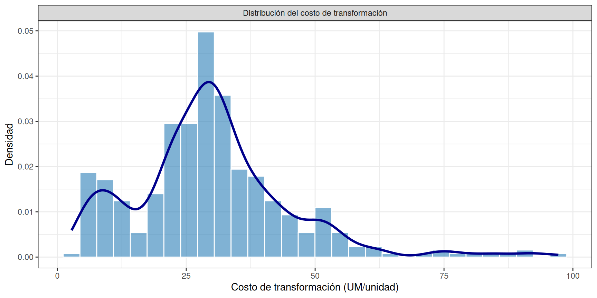
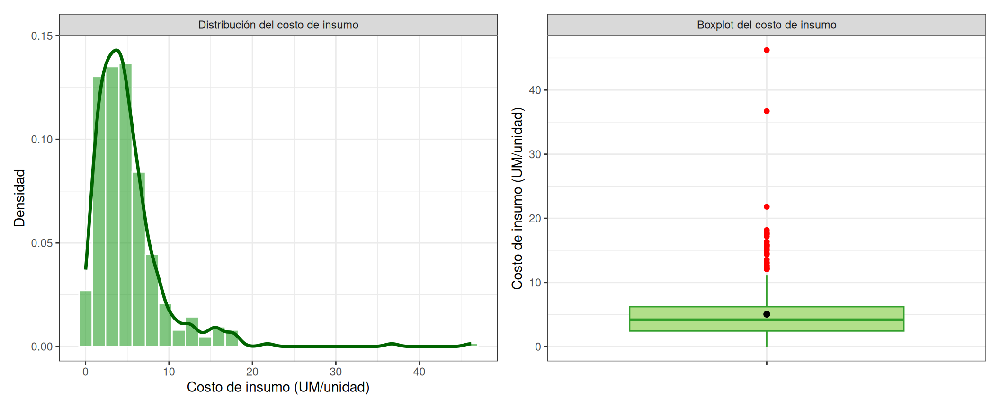
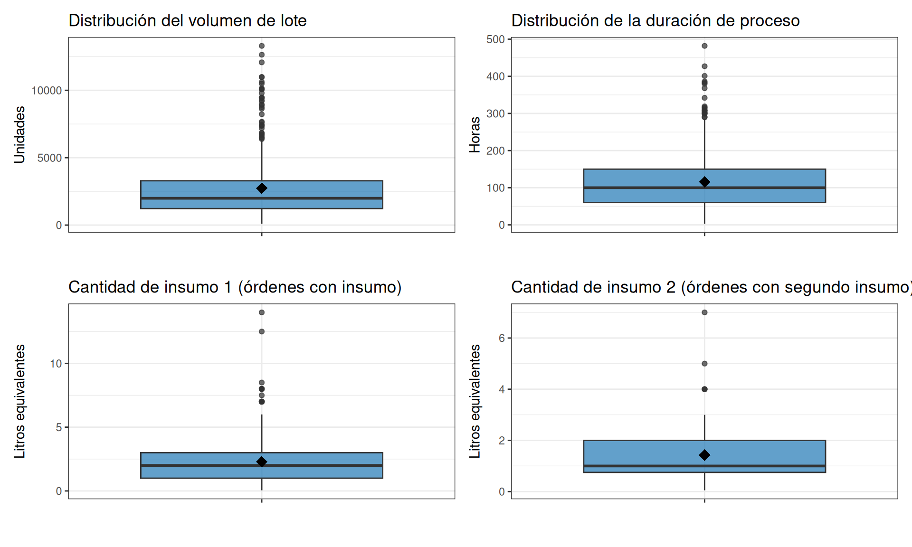
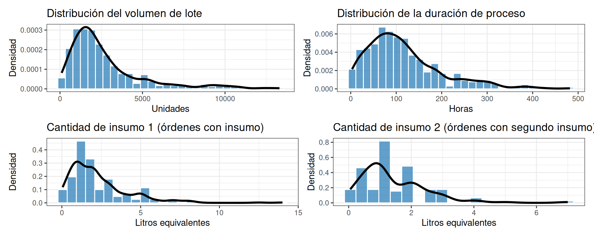
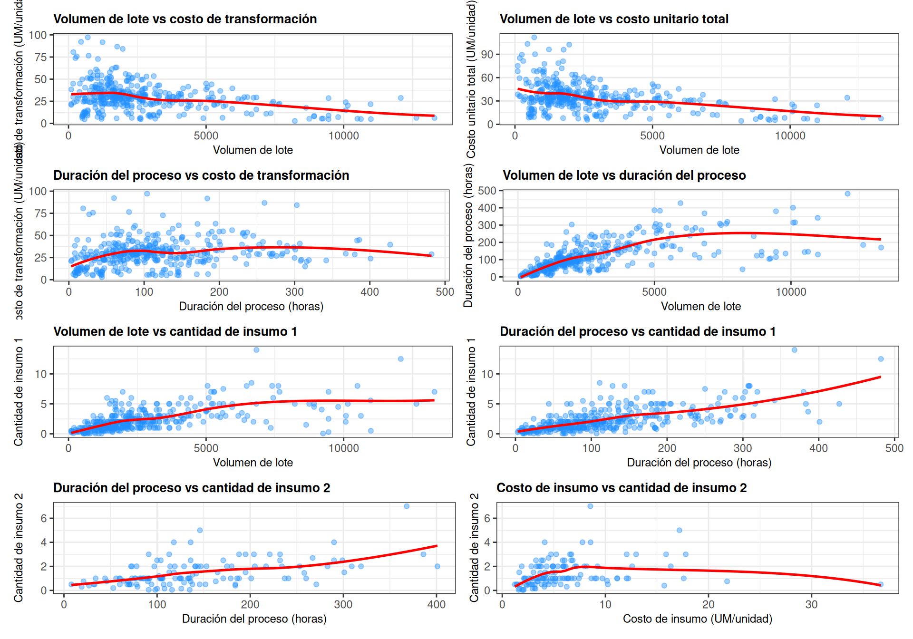
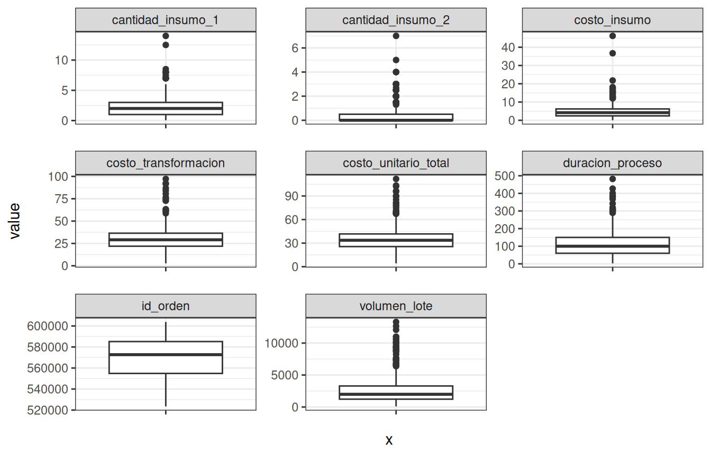
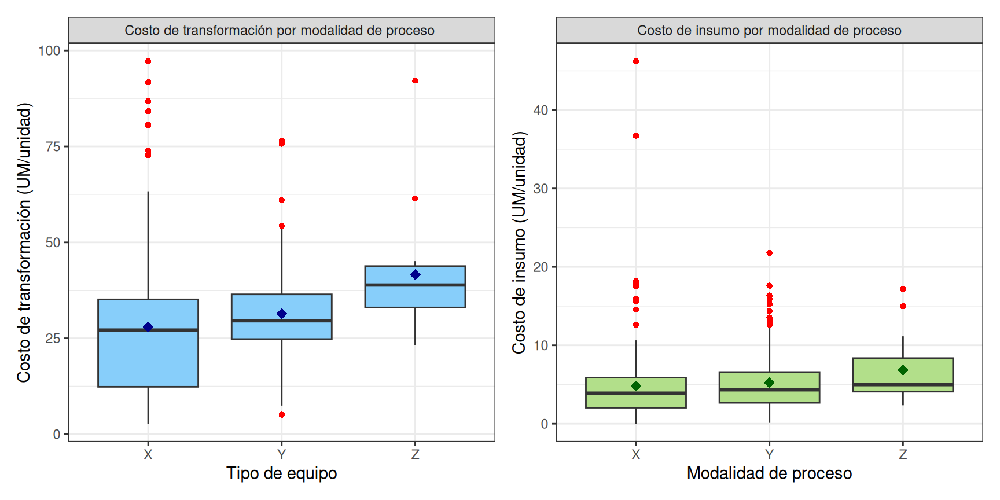
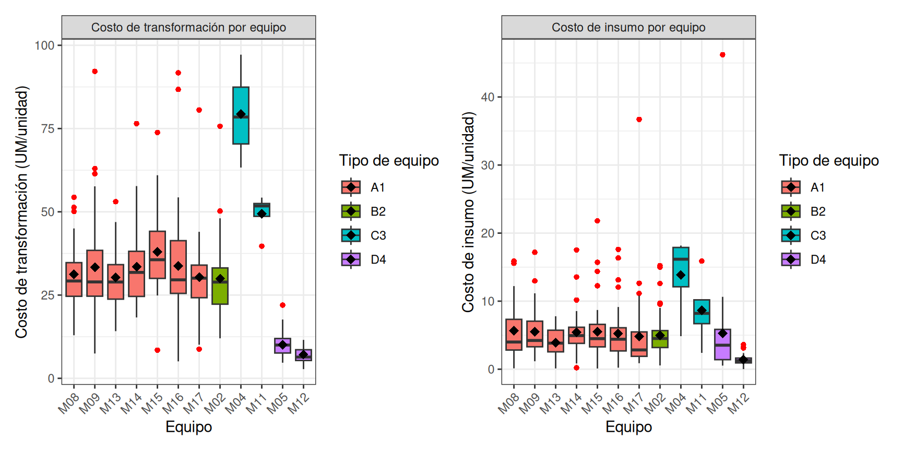
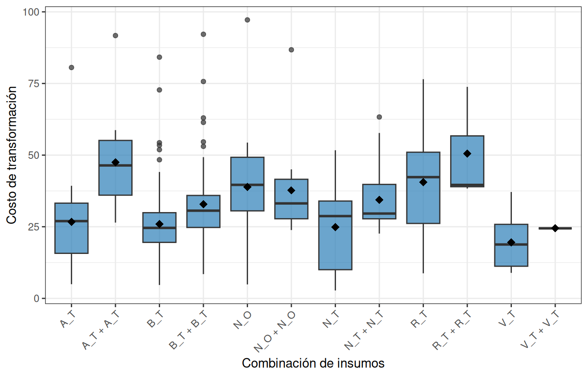

Portada
Analisis del costo unitario de producción en un proceso manufacturero multifactorial
Maestría en Estadística Aplicada
Autor: Gloria
Institución: Nombre de la Universidad
Fecha: 22/04/2026
Prefacio
Este libro presenta una estructura reproducible y académica para documentar un proyecto de análisis estadístico usando R, bookdown, GitHub Codespaces y GitHub Pages.
Se recomienda mantener todos los datos en la carpeta data/, todas las imágenes en images/ y todas las referencias en references.bib.
2 Introducción
La manufactura farmacéutica opera bajo presión creciente sobre sus márgenes. Los costos de conversión y de insumos representan en conjunto la mayor parte del costo de ventas en empresas de formas sólidas, y su variabilidad entre órdenes de producción puede comprometer la rentabilidad unitaria y la calidad de la información para la toma de decisiones (Basu et al., 2008; Suresh & Basu, 2008). En la práctica, los sistemas ERP registran centenares de órdenes por mes con decenas de atributos, pero los responsables de planeación rara vez disponen de evidencia estadística sobre cuáles de esos atributos explican la dispersión del costo unitario observado.
La investigación académica sobre determinantes del costo ha evolucionado en tres olas sucesivas. Foster y Gupta (1990) abrieron la tradición empírica al mostrar, con datos de 37 plantas de electrónica, que el volumen es un predictor fuerte del overhead, mientras que variables de complejidad y eficiencia resultan débiles una vez controlado el tamaño. Banker et al. (1995) matizaron esa conclusión: al especificar variables transaccionales como órdenes de cambio de ingeniería y personal de planeación, los autores encontraron que las transacciones explican una proporción mayor de la varianza de overhead que el propio volumen. Paralelamente, Cooper y Kaplan (1988, 1992) articularon el marco conceptual del costeo basado en actividades, en el que la regresión múltiple ocupa un rol central para identificar y validar drivers. Anderson, Banker y Janakiraman (2003), una década después, documentaron con 7,629 empresas un fenómeno que la tradición anterior no contemplaba: los costos responden de forma asimétrica a variaciones de volumen, comportamiento conocido como ‘sticky costs’.
En paralelo, la ingeniería de costos desarrolló una taxonomía complementaria. Niazi et al. (2006) sistematizaron las técnicas de estimación de costo de producto y ubicaron la regresión dentro de los métodos paramétricos y analógicos. Trabajos posteriores han comparado la regresión lineal con redes neuronales y métodos de ensemble en distintos sectores (Cavalieri et al., 2004; Loyer et al., 2016), con un consenso emergente: los métodos no lineales mejoran la precisión cuando se dispone de volúmenes grandes de datos homogéneos, pero la regresión lineal conserva ventajas de interpretabilidad que son críticas cuando el objetivo es explicar —no solo predecir— la variabilidad del costo.
La literatura específica sobre manufactura farmacéutica es más reducida y se orienta hacia dos focos: el costo de biosimilares y anticuerpos monoclonales (Basu et al., 2008) y la comparación económica entre tecnologías batch y continuas en formas sólidas (Matsunami et al., 2018). Estos trabajos identifican el tamaño de lote, el tipo de proceso y el rendimiento como drivers principales, pero no modelan estadísticamente la variabilidad del costo unitario a nivel de orden de producción. La escasez de estudios con esta granularidad, en particular en contextos latinoamericanos, constituye un vacío que este trabajo aborda.
El problema que motiva esta tesis se ubica en una empresa farmacéutica colombiana productora de cápsulas duras y medicamentos. La empresa cuenta con 406 órdenes de producción registradas en su ERP con información estructurada sobre ocho atributos operativos: modelo de máquina, máquina individual, tamaño de lote, número de insumos, tipo de insumos, referencia de insumos, tipo de proceso y tamaño del producto. El análisis descriptivo previo muestra una dispersión notable del costo unitario de conversión y del costo unitario de insumos entre órdenes, sin que exista claridad sobre cuáles atributos explican esa variabilidad. La hipótesis de trabajo es que las variables operativas mencionadas, de forma conjunta y con interacciones, explican una proporción sustancial de la variabilidad observada, y que su cuantificación estadística permite priorizar acciones correctivas en planeación y en calidad de datos del ERP.
La regresión lineal múltiple se elige como técnica principal por cuatro razones. Primero, por su alineación con la tradición empírica dominante en la literatura de cost drivers (Foster & Gupta, 1990; Banker et al., 1995; Anderson et al., 2003). Segundo, por su interpretabilidad: los coeficientes parciales permiten atribuir variación a cada driver controlando por los demás, lo cual es indispensable para el diálogo con el área financiera y de operaciones. Tercero, por su compatibilidad con pruebas diagnósticas estandarizadas (multicolinealidad, heterocedasticidad, normalidad de residuos) documentadas en textos metodológicos de referencia (Montgomery et al., 2021; Hair et al., 2018). Cuarto, porque el tamaño muestral de 406 órdenes permite estimar con razonable potencia modelos con variables categóricas codificadas como dummies, complementables con regularización Lasso o Ridge cuando la colinealidad o la alta cardinalidad lo exijan (James et al., 2021).
El aporte del estudio se articula en tres ejes. En el eje teórico, extiende la evidencia empírica sobre cost drivers al sector de manufactura farmacéutica de formas sólidas, poco representado en la literatura internacional. En el eje metodológico, combina regresión múltiple con variables categóricas de alta cardinalidad a nivel de orden, modela dos variables respuesta complementarias (conversión e insumos) y contrasta la especificación lineal con alternativas regularizadas. En el eje aplicado, entrega a la empresa un conjunto de coeficientes interpretables, un ranking de drivers por poder explicativo, y recomendaciones concretas de planeación y de mejora del registro de datos en el ERP, lo cual conecta directamente con la línea de investigación de calidad de datos transaccionales que la autora viene desarrollando.
3 Objetivos EN CONSTRUCCCION
3.1 Objetivo general
Analizar y cuantificar el impacto de diversos factores productivos (equipos, modalidades, productos, insumos, tiempo y volumen) sobre el costo unitario, utilizando métodos paramétricos y no paramétricos para fundamentar la toma de decisiones en evidencia técnica.
3.2 Objetivos específicos
- Analizar las diferencias entre tipos de equipo y su impacto en el costo
- Investigar si existe igualdad de medias en los equipos de un mismo tipo.
- Explorar la correlación entre el costo unitario y el tiempo de conversión.
- Evaluar la correlación entre el costo unitario, el número de insumos y el tipo de insumos.
4 Metodología
Este capítulo documenta el diseño metodológico del estudio, el proceso de obtención de los datos desde el sistema ERP, y los procedimientos de carga, verificación de integridad y depuración aplicados antes del análisis estadístico. Al final del capítulo, el dataset analítico queda conformado por las órdenes de producción que cumplen los criterios de completitud y validez operativa.
4.1 Diseño del estudio
Este trabajo corresponde a un estudio observacional, retrospectivo y transversal sobre el proceso productivo de una empresa farmacéutica colombiana. Es observacional porque no se manipulan variables sobre el proceso; retrospectivo porque utiliza registros generados durante operaciones ya ejecutadas; y transversal porque captura información de un período acotado sin seguimiento longitudinal de unidades individuales.
La muestra inicial está conformada por 404 órdenes de producción registradas en el sistema ERP durante el período de estudio, extraídas mediante consultas SQL sobre las tablas transaccionales de órdenes, consumos y tiempos, junto con la tabla de costos por período y el maestro de productos. La consolidación se realizó en Excel y posteriormente se exportó a formato CSV para garantizar reproducibilidad y trazabilidad. Tras la depuración de registros inválidos documentada en la sección 4.2.3, el dataset analítico final queda conformado por las órdenes que cubren la variedad de productos, equipos, modalidades y tamaños de lote habituales del proceso.
Limitaciones conocidas del dataset:
- Sesgo de selección: se excluyen registros de órdenes anuladas, abortadas o reprocesadas, limitándose exclusivamente a procesos completados.
- Variabilidad operativa: la calidad del registro depende de la disciplina del operario en el momento de cierre de la orden en el ERP, lo cual introduce una fuente de error de medición no cuantificable a priori.
- Imprecisión en consumos: los insumos se registran en litros equivalentes a un envase estándar; las fracciones menores se estiman visualmente ante la falta de un proceso de pesaje, lo que afecta la precisión de las cantidades reportadas.
- Base de valoración: los costos se expresan en unidades monetarias por producto, calculados según la tarifa de costeo del período reportado.
Aspectos éticos y de confidencialidad. Los datos provienen de operaciones industriales reales y contienen información sensible para la empresa. Por esta razón, los identificadores de producto, máquina e insumo fueron anonimizados en origen mediante codificación alfanumérica que preserva la estructura analítica sin revelar identidades comerciales.
Software. Los análisis se realizan en R versión 4 o superior, con los paquetes tidyverse para manipulación y visualización, Amelia para diagnóstico de valores faltantes, janitor como guardia defensiva en limpieza de nombres, kableExtra para presentación de tablas, y patchwork y gridExtra para composición de gráficos. Todos los análisis son completamente reproducibles a partir del código fuente disponible en el repositorio.
4.2 Extracción, transformación y carga (ETL)
4.2.1 Carga del conjunto de datos
El archivo CSV exportado desde el consolidado Excel utiliza punto y coma (;) como separador de columnas y punto (.) como separador decimal. Dado que read_csv2 asume coma como decimal y read_csv asume coma como separador, se utiliza read_delim con especificación explícita de ambos parámetros.
4.2.2 Verificación de la lectura
Verificamos que el archivo se leyó correctamente inspeccionando las primeras filas, las dimensiones, los nombres de las columnas y la estructura de tipos detectados.
## # A tibble: 5 × 16
## periodo codigo_producto id_orden volumen_lote costo_transformacion
## <dbl> <chr> <dbl> <dbl> <dbl>
## 1 202501 P05747 546009 7440 24.6
## 2 202501 P06976 551645 1680 36.5
## 3 202501 P07920 548767 1556 22.3
## 4 202501 P07767 552185 2700 14.2
## 5 202501 P07576 546482 2578 18.2
## # ℹ 11 more variables: costo_insumo <dbl>, equipo_id <chr>, tipo_equipo <chr>,
## # categoria_producto <dbl>, num_insumos <dbl>, insumo_1 <chr>,
## # insumo_2 <chr>, cantidad_insumo_1 <dbl>, cantidad_insumo_2 <dbl>,
## # modalidad_proceso <chr>, duracion_proceso <dbl>## [1] 404 16## [1] "periodo" "codigo_producto" "id_orden"
## [4] "volumen_lote" "costo_transformacion" "costo_insumo"
## [7] "equipo_id" "tipo_equipo" "categoria_producto"
## [10] "num_insumos" "insumo_1" "insumo_2"
## [13] "cantidad_insumo_1" "cantidad_insumo_2" "modalidad_proceso"
## [16] "duracion_proceso"## spc_tbl_ [404 × 16] (S3: spec_tbl_df/tbl_df/tbl/data.frame)
## $ periodo : num [1:404] 202501 202501 202501 202501 202501 ...
## $ codigo_producto : chr [1:404] "P05747" "P06976" "P07920" "P07767" ...
## $ id_orden : num [1:404] 546009 551645 548767 552185 546482 ...
## $ volumen_lote : num [1:404] 7440 1680 1556 2700 2578 ...
## $ costo_transformacion: num [1:404] 24.6 36.5 22.3 14.2 18.2 ...
## $ costo_insumo : num [1:404] 4.18 1.59 2.15 3.84 2.08 ...
## $ equipo_id : chr [1:404] "M08" "M02" "M14" "M13" ...
## $ tipo_equipo : chr [1:404] "A1" "B2" "A1" "A1" ...
## $ categoria_producto : num [1:404] 7 5 5 5 5 5 5 5 5 4 ...
## $ num_insumos : num [1:404] 1 2 1 1 2 2 2 2 1 1 ...
## $ insumo_1 : chr [1:404] "B_T" "B_T" "N_O" "B_T" ...
## $ insumo_2 : chr [1:404] NA "N_T" NA NA ...
## $ cantidad_insumo_1 : num [1:404] 6 1.5 0.5 2 2 2 2 2 1.3 2.5 ...
## $ cantidad_insumo_2 : num [1:404] 0 0.05 0 0 0.05 0.05 0.05 0.5 0 0 ...
## $ modalidad_proceso : chr [1:404] "X" "Y" "Y" "X" ...
## $ duracion_proceso : num [1:404] 300 98 100 62 91 ...
## - attr(*, "spec")=
## .. cols(
## .. periodo = col_double(),
## .. codigo_producto = col_character(),
## .. id_orden = col_double(),
## .. volumen_lote = col_double(),
## .. costo_transformacion = col_double(),
## .. costo_insumo = col_double(),
## .. equipo_id = col_character(),
## .. tipo_equipo = col_character(),
## .. categoria_producto = col_double(),
## .. num_insumos = col_double(),
## .. insumo_1 = col_character(),
## .. insumo_2 = col_character(),
## .. cantidad_insumo_1 = col_double(),
## .. cantidad_insumo_2 = col_double(),
## .. modalidad_proceso = col_character(),
## .. duracion_proceso = col_double()
## .. )
## - attr(*, "problems")=<externalptr>El conjunto de datos contiene 404 órdenes de producción y 16 variables, conforme a la definición presentada en el capítulo del diccionario de datos. Los costos costo_transformacion y costo_insumo, así como las cantidades de insumo, se leyeron correctamente como numéricos de tipo double. El significado, tipo analítico, unidad de medida y rol de cada una de las 16 variables se documenta en detalle en el siguiente capítulo.
4.2.3 Revisión de integridad de datos
La revisión de integridad se estructura en tres dimensiones analíticas que pueden solaparse o converger según la naturaleza de las variables:
- Cadenas vacías: marcadores de ausencia implícita en variables de tipo texto.
- Valores NA: ausencia explícita de información en el sistema.
- Valores con magnitud cero: registros presentes en el dataset pero con valor numérico cero. Dado que las variables analizadas corresponden a costos, volúmenes y tiempos de proceso, la presencia de valores cero carece de sustento teórico, ya que no es consistente con la naturaleza de estas magnitudes.
4.2.3.1 Cadenas vacías
conteo_vacios <- datos %>%
summarise(across(everything(), ~ sum(trimws(as.character(.)) == "", na.rm = TRUE))) %>%
pivot_longer(everything(), names_to = "variable", values_to = "n_vacios")
total_vacios <- sum(conteo_vacios$n_vacios)
knitr::kable(conteo_vacios, caption = "Conteo de cadenas vacías por variable") %>%
kableExtra::kable_styling(full_width = FALSE) %>%
kableExtra::column_spec(1, width = "12em") %>%
kableExtra::column_spec(2, width = "12em")| variable | n_vacios |
|---|---|
| periodo | 0 |
| codigo_producto | 0 |
| id_orden | 0 |
| volumen_lote | 0 |
| costo_transformacion | 0 |
| costo_insumo | 0 |
| equipo_id | 0 |
| tipo_equipo | 0 |
| categoria_producto | 0 |
| num_insumos | 0 |
| insumo_1 | 0 |
| insumo_2 | 0 |
| cantidad_insumo_1 | 0 |
| cantidad_insumo_2 | 0 |
| modalidad_proceso | 0 |
| duracion_proceso | 0 |
Se identificaron 0 cadenas vacías en el dataset. No se requiere intervención en esta dimensión de integridad.
4.2.3.2 Valores NA
conteo_na <- datos %>%
summarise(across(everything(), ~ sum(is.na(.)))) %>%
pivot_longer(everything(), names_to = "variable", values_to = "n_na")
tabla_na <- conteo_na %>% filter(n_na > 0)
total_na <- sum(conteo_na$n_na)
n_vars_con_na <- nrow(tabla_na)
n_na_insumo_1 <- conteo_na %>% filter(variable == "insumo_1") %>% pull(n_na)
n_na_insumo_2 <- conteo_na %>% filter(variable == "insumo_2") %>% pull(n_na)
pct_na_insumo_2 <- round(n_na_insumo_2 / n_filas_inicial * 100, 1)
knitr::kable(tabla_na, caption = "Variables con valores NA") %>%
kableExtra::kable_styling(full_width = FALSE) %>%
kableExtra::column_spec(1, width = "12em") %>%
kableExtra::column_spec(2, width = "12em")| variable | n_na |
|---|---|
| insumo_1 | 8 |
| insumo_2 | 279 |
El conteo absoluto muestra un total de 287 valores NA distribuidos en 2 variables del dataset. La variable insumo_2 concentra 279 ausencias, equivalentes al 69.1% de las 404 órdenes; conforme a las consultas SQL de origen, estos NA no representan datos perdidos sino la ausencia estructural de un segundo insumo cuando num_insumos < 2, y se recodifican en la sección 4.2.4 como una categoría explícita. La variable insumo_1 presenta 8 ausencias, las cuales se investigan en la siguiente sección junto con los valores cero, dado que ambos fenómenos tienden a coincidir en los mismos registros.
4.2.3.3 Valores con magnitud cero
conteo_ceros <- datos %>%
summarise(across(where(is.numeric), ~ sum(. == 0, na.rm = TRUE))) %>%
pivot_longer(everything(), names_to = "variable", values_to = "n_ceros")
total_ceros <- sum(conteo_ceros$n_ceros)
knitr::kable(conteo_ceros, caption = "Conteo de valores cero por variable numérica") %>%
kableExtra::kable_styling(full_width = FALSE) %>%
kableExtra::column_spec(1, width = "12em") %>%
kableExtra::column_spec(2, width = "12em")| variable | n_ceros |
|---|---|
| periodo | 0 |
| id_orden | 0 |
| volumen_lote | 5 |
| costo_transformacion | 5 |
| costo_insumo | 9 |
| categoria_producto | 0 |
| num_insumos | 8 |
| cantidad_insumo_1 | 8 |
| cantidad_insumo_2 | 279 |
| duracion_proceso | 4 |
Se identificaron 318 registros con valores en cero distribuidos entre las variables numéricas. Los 279 ceros en cantidad_insumo_2 coinciden con el total de órdenes que reportan un solo insumo y corresponden a una condición estructural y esperada del dataset, no a mediciones anómalas. A continuación se identifican las órdenes con valores cero en variables distintas de cantidad_insumo_2:
cols_excluir <- c("cantidad_insumo_2")
casos_con_ceros <- datos %>%
filter(if_any(
where(is.numeric) & -all_of(cols_excluir),
~ . == 0
)) %>%
select(id_orden, volumen_lote, costo_transformacion, costo_insumo,
duracion_proceso, num_insumos) %>%
arrange(costo_transformacion)
n_casos_cero <- nrow(casos_con_ceros)
knitr::kable(casos_con_ceros,
caption = "Órdenes con valores cero en variables no estructurales",
format.args = list(big.mark = "")) %>%
kableExtra::kable_styling(full_width = FALSE)| id_orden | volumen_lote | costo_transformacion | costo_insumo | duracion_proceso | num_insumos |
|---|---|---|---|---|---|
| 566930 | 0 | 0.000000 | 0 | 123.0 | 2 |
| 584267 | 0 | 0.000000 | 0 | 0.0 | 0 |
| 587628 | 0 | 0.000000 | 0 | 0.0 | 0 |
| 594854 | 0 | 0.000000 | 0 | 0.0 | 0 |
| 584273 | 0 | 0.000000 | 0 | 0.0 | 0 |
| 585979 | 7350 | 5.640275 | 0 | 100.0 | 0 |
| 591391 | 2525 | 12.492979 | 0 | 54.5 | 0 |
| 551657 | 2100 | 23.827177 | 0 | 107.0 | 0 |
| 568828 | 375 | 53.438830 | 0 | 32.0 | 0 |
Se identifican 9 órdenes de producción con valores cero en variables no estructurales. Tras consulta con el área de operaciones, estas órdenes se clasifican en tres categorías causales:
| Categoría | Causa operativa | Órdenes |
|---|---|---|
| Órdenes cerradas sin ejecutar | Volumen, tiempos y consumos en cero; en la práctica no se trabajaron | 4 |
| Errores de digitación | num_insumos = 0 o cantidad_insumo_1 = NA, configuraciones no válidas del proceso | 4 |
| Producción no conforme | Recursos consumidos asumidos como merma; no se asignaron al producto conforme | 1 |
| Total | 9 |
Las tres categorías representan configuraciones no válidas para el análisis de costo unitario: en los tres casos, el costo del insumo no refleja una producción efectiva del producto conforme, por lo que su inclusión distorsionaría los estadísticos descriptivos y las estimaciones inferenciales posteriores.
4.2.3.4 Eliminación de registros inválidos
Dado que las tres categorías causales convergen en un rasgo común —ausencia de costo de insumo asignable al producto conforme— la variable costo_insumo == 0 se adopta como criterio de filtrado.
## # A tibble: 2 × 3
## `costo_insumo == 0` n porcentaje
## <lgl> <int> <dbl>
## 1 FALSE 395 97.8
## 2 TRUE 9 2.2datos <- datos %>%
filter(costo_insumo != 0)
n_filas_final <- nrow(datos)
n_eliminadas <- n_filas_inicial - n_filas_final
pct_eliminadas <- round(n_eliminadas / n_filas_inicial * 100, 1)
dim(datos)## [1] 395 16Se eliminaron 9 órdenes (2.2% del total) con costo_insumo == 0. El dataset analítico queda conformado por 395 órdenes, las cuales constituyen la base para todos los análisis posteriores.
4.2.4 Conversión de tipos
Sobre el dataset ya depurado se ajustan los tipos de las variables cuya representación por defecto no corresponde a su naturaleza analítica:
- La variable
periodoviene como enteroYYYYMM; en análisis posteriores se podrá convertir a fecha para análisis de temporalidad, pero en el presente estudio se conserva como texto, dado que no se realizarán análisis de series de tiempo. - La variable
num_insumos, restringida a los valores 1 y 2, se trata como factor ordenado. - Las variables
tipo_equipo,categoria_producto,equipo_id,modalidad_proceso,insumo_1einsumo_2se convierten a factor para los análisis inferenciales posteriores. - La variable
insumo_2requiere además una recodificación explícita de los valores faltantes a la categoríasin_segundo_insumo, dado que el NA no representa un dato perdido sino una característica estructural de la orden (cuandonum_insumos < 2).
datos <- datos %>%
mutate(
periodo = as.character(periodo),
num_insumos = factor(num_insumos, levels = c(1, 2), ordered = TRUE),
tipo_equipo = as.factor(tipo_equipo),
categoria_producto = as.factor(categoria_producto),
equipo_id = as.factor(equipo_id),
modalidad_proceso = as.factor(modalidad_proceso),
insumo_1 = as.factor(insumo_1),
insumo_2 = factor(if_else(is.na(insumo_2), "sin_segundo_insumo", insumo_2))
)
str(datos)## tibble [395 × 16] (S3: tbl_df/tbl/data.frame)
## $ periodo : chr [1:395] "202501" "202501" "202501" "202501" ...
## $ codigo_producto : chr [1:395] "P05747" "P06976" "P07920" "P07767" ...
## $ id_orden : num [1:395] 546009 551645 548767 552185 546482 ...
## $ volumen_lote : num [1:395] 7440 1680 1556 2700 2578 ...
## $ costo_transformacion: num [1:395] 24.6 36.5 22.3 14.2 18.2 ...
## $ costo_insumo : num [1:395] 4.18 1.59 2.15 3.84 2.08 ...
## $ equipo_id : Factor w/ 12 levels "M02","M04","M05",..: 4 1 9 8 1 1 1 1 1 6 ...
## $ tipo_equipo : Factor w/ 4 levels "A1","B2","C3",..: 1 2 1 1 2 2 2 2 2 3 ...
## $ categoria_producto : Factor w/ 7 levels "1","2","3","4",..: 7 5 5 5 5 5 5 5 5 4 ...
## $ num_insumos : Ord.factor w/ 2 levels "1"<"2": 1 2 1 1 2 2 2 2 1 1 ...
## $ insumo_1 : Factor w/ 6 levels "A_T","B_T","N_O",..: 2 2 3 2 2 2 2 2 5 3 ...
## $ insumo_2 : Factor w/ 7 levels "A_T","B_T","N_O",..: 6 4 6 6 7 7 7 7 6 6 ...
## $ cantidad_insumo_1 : num [1:395] 6 1.5 0.5 2 2 2 2 2 1.3 2.5 ...
## $ cantidad_insumo_2 : num [1:395] 0 0.05 0 0 0.05 0.05 0.05 0.5 0 0 ...
## $ modalidad_proceso : Factor w/ 3 levels "X","Y","Z": 1 2 2 1 1 1 1 1 2 1 ...
## $ duracion_proceso : num [1:395] 300 98 100 62 91 ...Tras la conversión, las variables categóricas quedan representadas como factores, el factor ordenado num_insumos preserva la jerarquía natural de sus niveles, y la categoría sin_segundo_insumo de insumo_2 absorbe las ausencias estructurales sin pérdida de observaciones.
4.2.5 Consideraciones estructurales para el análisis
Antes de entrar al análisis exploratorio, vale la pena dejar claros algunos puntos sobre la estructura del dataset depurado, ya que pueden prestarse a malas interpretaciones.
- La variable cantidad_insumo_2 toma el valor cero cuando num_insumos = 1. Esto significa simplemente ese insumo 2 no existe en ese caso. Son ceros “estructurales” .
- Los costos costo_transformacion y costo_insumo están definidos como valores monetarios por unidad de producto. Permitiendo comparar directamente entre órdenes, sin importar el tamaño del lote, ya que no requieren ajustes por escala de producción.
El dataset con el que se trabajará está compuesto por r n_filas_final órdenes de producción. Sobre esta base se desarrollan los análisis exploratorios e inferenciales de los siguientes capítulos.
5 Diccionario de campos
| Variable | Descripción | Tipo | Unidad | Rol en el análisis |
|---|---|---|---|---|
| periodo | Año-mes contable de la orden, formato YYYYMM | Temporal (ordinal) | Mes | Control / estratificación |
| codigo_producto | Identificador único del SKU producido | Categórica nominal | — | Factor de agrupación |
| id_orden | Identificador único de la orden de producción | Categórica nominal | — | Identificador (no entra al modelo) |
| volumen_lote | Cantidad de unidades producidas en la orden | Numérica discreta | unidades | Predictora (escala) |
| costo_transformacion | Costo de conversión por unidad producida (mano de obra, energía, depreciación, indirectos) | Numérica continua | UM/unidad | Variable respuesta 1 |
| costo_insumo | Costo de materias primas e insumos por unidad producida | Numérica continua | UM/unidad | Variable respuesta 2 |
| equipo_id | Identificador único de la máquina física | Categórica nominal | — | Predictora (efecto fijo o aleatorio) |
| tipo_equipo | Familia o categoría tecnológica de la máquina (A1, B2, …) | Categórica nominal | — | Predictora (factor) |
| categoria_producto | Clasificación del producto | Categórica nominal | — | Predictora (factor) |
| num_insumos | Número de insumos consumidos en la orden | Categórica ordinal | {0, 1, 2} | Predictora (proxy de complejidad) |
| insumo_1 | Identificador del primer insumo principal | Categórica nominal | — | Predictora (factor) |
| insumo_2 | Identificador del segundo insumo (NA cuando num_insumos < 2) | Categórica nominal | — | Predictora (factor) |
| cantidad_insumo_1 | Cantidad consumida del insumo 1 | Numérica continua | kg / L (verificar) | Predictora (intensidad de uso) |
| cantidad_insumo_2 | Cantidad consumida del insumo 2 | Numérica continua | kg / L (verificar) | Predictora (intensidad de uso) |
| modalidad_proceso | Modalidad de operación del proceso (X, Y, …) | Categórica nominal | — | Predictora (factor) |
| duracion_proceso | Tiempo total de ejecución de la orden | Numérica continua | horas | Predictora (intensidad temporal) |
6 Análisis Exploratorio de Datos
Análisis Exploratorio de Datos — Capítulo 6 Prefacio para el lector Este capítulo cuenta la historia de un dataset que, a primera vista, parecía homogéneo y terminó revelando una estructura mucho más compleja. El recorrido se organiza deliberadamente como una narrativa analítica: comienza con una mirada agregada, detecta señales de heterogeneidad, formula hipótesis, decide profundizar, y termina con una lectura estratificada que cambia radicalmente lo que parecía evidente al inicio. El objetivo de esta estructura es doble. Técnicamente, busca demostrar que ciertos hallazgos no pueden obtenerse sin estratificación. Para la dirección financiera, busca traducir esos hallazgos a implicaciones concretas sobre costo, eficiencia y decisiones de gestión.
6.1 Punto de partida: carga del dataset analítico Se parte del dataset depurado en el capítulo de metodología (395 órdenes de producción con tipos ajustados). La limpieza previa ya eliminó errores de digitación y validó la integridad de los registros; este capítulo se concentra en entender qué dicen esos datos. library(tidyverse) library(patchwork) library(gridExtra) library(knitr) library(kableExtra)
datos <- readRDS(“data/data_costos_limpio.rds”) %>% mutate(costo_unitario_total = costo_transformacion + costo_insumo) n_total <- nrow(datos) El dataset contiene r n_total órdenes de producción y r ncol(datos) variables.
6.2 Primera lectura agregada: lo que parece ser el sistema 6.2.1 Comportamiento global de los costos Tres variables respuesta organizan el análisis: el costo de transformación (eficiencia del proceso productivo), el costo de insumo (eficiencia de materias primas), y el costo unitario total (agregado económico). [Aquí van los resúmenes descriptivos y gráficos univariados de costo_transformacion, costo_insumo y costo_unitario_total tal como los traes del capítulo actual.] Lectura inicial para la dirección financiera. El sistema productivo, en promedio, opera con un costo unitario cercano a r round(mean(datos$costo_unitario_total), 2) UM/unidad. El componente de transformación representa aproximadamente el 85% del costo total; el de insumos, el 15%. Esta proporción es estructural: cualquier iniciativa de reducción de costos que se concentre solo en el componente de insumos tendrá un techo muy bajo. La palanca real está en la transformación. 6.2.2 Primera señal de complejidad: los histogramas no son simétricos Los tres costos presentan distribuciones asimétricas con cola derecha pronunciada. En costo_transformacion se observa además un leve segundo abultamiento hacia valores bajos (5–15 UM), que rompe el patrón unimodal esperado.
Nota técnica (en lenguaje simple): una distribución con dos “jorobas” suele indicar que los datos no provienen de un proceso único, sino de dos o más procesos distintos mezclados. El promedio se vuelve engañoso porque representa algo que no existe realmente.
Primera hipótesis que emerge. El sistema productivo puede no ser un único proceso homogéneo, sino una mezcla de regímenes operativos con dinámicas de costo distintas. Si esto es cierto, los estadísticos agregados están ocultando diferencias estructurales importantes. 6.2.3 Variables operativas: escala, tiempo e insumos [Resumen descriptivo de volumen_lote, duracion_proceso, cantidad_insumo_1 y cantidad_insumo_2.] Implicación para el negocio. El sistema produce lotes de escalas muy distintas (entre 100 y 13.300 unidades), con duraciones que van de 3 a 482 horas. Esta heterogeneidad no es ruido: refleja una lógica de producción “make-to-order” donde cada orden responde a un pedido específico. El tamaño estándar de lote no existe. Esto tiene consecuencias directas: el sistema no puede optimizarse con reglas uniformes; requerirá segmentación por rangos de producción.
6.3 Segunda mirada: la estructura categórica sugiere algo más 6.3.1 Distribución de factores [Tabla de frecuencias de variables categóricas.] Lo relevante de esta tabla. El tipo_equipo A1 concentra el 72.7% de las órdenes. Esto no es un dato neutro: significa que cualquier estadístico global del sistema está dominado por el comportamiento de un solo tipo de equipo. Cuando un análisis habla del “costo promedio del sistema”, en realidad habla —en un 73%— del costo promedio de A1. 6.3.2 La señal crítica: las categorías no son independientes Un primer análisis bivariado de costos por tipo de equipo (que viene más adelante) muestra diferencias muy grandes: tipo_equipocosto_transformación mediocosto_insumo medioA133.05.2B229.95.0C364.411.3D48.83.6 Las diferencias son tan marcadas que invitan a preguntar: ¿cada tipo de equipo es realmente comparable con los otros? Una tabulación cruzada contesta la pregunta y cambia el análisis: tabla_dep <- datos %>% count(tipo_equipo, modalidad_proceso, num_insumos) %>% arrange(tipo_equipo, modalidad_proceso, num_insumos)
kable(tabla_dep, caption = “Combinaciones observadas (tipo_equipo × modalidad × num_insumos)”) %>% kable_styling(full_width = FALSE) La tabla revela un hecho crítico: el espacio operativo no es completo. No todos los equipos operan en todas las modalidades. No todas las modalidades se ejecutan con todos los números de insumos. Las combinaciones son asimétricas y muchas celdas están vacías o con muy pocas observaciones.
6.4 El giro del análisis: el dataset tiene estructura jerárquica 6.4.1 El descubrimiento Lo que parecía un dataset plano con 7 variables categóricas independientes es en realidad un sistema con dependencias operativas:
El tipo de equipo determina qué modalidades de proceso son factibles. La modalidad de proceso restringe qué configuraciones de insumos pueden ejecutarse. El número de insumos condiciona qué combinaciones de producto son posibles.
Traducción para la dirección financiera: un operario no elige libremente “equipo D4 con modalidad Y y dos insumos”. Esa combinación simplemente no existe en el proceso. El dataset refleja restricciones técnicas reales de la planta, no una muestra aleatoria de un universo uniforme.
6.4.2 Por qué esto cambia todo el análisis Si las categorías no son independientes, comparar costos marginalmente es engañoso. Ejemplo concreto:
Si D4 solo opera en modalidad X con 1 insumo, y A1 opera en X, Y y Z con 1 o 2 insumos, entonces decir “D4 es más barato que A1” mezcla dos cosas: el efecto del equipo y el efecto de la modalidad/insumos. No sabemos si D4 es barato porque el equipo es eficiente, o porque solo se usa en las configuraciones más simples.
Este tipo de error se llama confusión (confounding) y es una de las trampas clásicas de los análisis agregados. Desde este punto del capítulo, el análisis abandona la lógica “promedio por categoría” y adopta una lógica condicional: cada efecto se evalúa dentro del contexto operativo donde sí hay comparabilidad. 6.4.3 Decisiones metodológicas derivadas del descubrimiento Tras el diagnóstico anterior, se adoptan tres decisiones explícitas que guían el resto del capítulo: Decisión 1 — Exclusión de modalidad Z. La modalidad Z corresponde a órdenes excepcionales donde se aplican las modalidades X y Y al mismo producto por solicitud del cliente. Con 14 órdenes distribuidas en 3 celdas (3.5% del dataset), no permite inferencia estadística con potencia suficiente y, al representar una composición de procesos en lugar de una modalidad alternativa, no es conceptualmente comparable con X o Y. Las órdenes con Z se excluyen del análisis principal y se caracterizan brevemente al final del capítulo (sección 6.8). Decisión 2 — Exclusión del tipo_equipo C3. C3 tiene solo 8 órdenes (2%), concentradas casi íntegramente en la combinación (X, 1) con un único caso en (X, 2) y cero en modalidad Y. Con este n, los intervalos de confianza son extremadamente amplios y cualquier diferencia observada queda dominada por ruido. C3 se excluye del análisis estratificado y sus estadísticos descriptivos se reportan al final con una advertencia explícita sobre su no comparabilidad. Decisión 3 — Configuración universal. Tras excluir Z y C3, el equipo A1 es el único que cubre las 4 combinaciones (X × Y × 1 × 2), con 274 órdenes. Es la única base analítica donde es posible evaluar de forma limpia los efectos de modalidad y número de insumos. Los análisis multivariados profundos se desarrollarán sobre este subconjunto. datos_principal <- datos %>% filter(modalidad_proceso != “Z”, tipo_equipo != “C3”) %>% mutate(modalidad_proceso = droplevels(modalidad_proceso), tipo_equipo = droplevels(tipo_equipo))
write_csv2(datos_principal, “data/data_costos_principal.csv”) saveRDS(datos_principal, “data/data_costos_principal.rds”)
n_principal <- nrow(datos_principal) Tras estas exclusiones, el dataset principal queda conformado por r n_principal órdenes (r round(n_principal / n_total * 100, 1)% del total depurado). Sobre este subconjunto se desarrolla el análisis estratificado que sigue.
6.5 Estructura del espacio operativo sobre el dataset principal 6.5.1 Mapa de combinaciones mapa_n <- datos_principal %>% count(tipo_equipo, modalidad_proceso, num_insumos) %>% pivot_wider(names_from = c(modalidad_proceso, num_insumos), values_from = n, values_fill = 0, names_sep = “_“)
kable(mapa_n, caption = “Tamaño muestral por combinación (dataset principal)”) %>% kable_styling(full_width = FALSE) Lectura del mapa.
A1 tiene cobertura completa: 60 órdenes en (X, 1), 63 en (X, 2), 118 en (Y, 1), 33 en (Y, 2). Total: 274. Es el único equipo que permite comparar simultáneamente los efectos de modalidad y de número de insumos. B2 tiene cobertura en las 4 combinaciones pero con n reducido (7, 13, 18, 6). Permite análisis condicional con cautela. D4 opera exclusivamente en (X, 1) con 55 órdenes. No se puede estudiar si D4 cambia de comportamiento en otras modalidades o con otros insumos: esa información no existe.
6.5.2 Comparaciones válidas identificadas Este mapa define el universo de comparaciones legítimas:
Comparación inter-equipos en (X, 1): es el único estrato donde A1 (n=60), B2 (n=7) y D4 (n=55) coexisten. Total: 122 órdenes. Es la única celda limpia para responder la pregunta “¿los equipos difieren en costo?”. Comparación intra-equipo A1 (efectos de modalidad e insumos): con 274 órdenes y cobertura completa, A1 es la configuración universal para estudiar cómo varían los costos según modalidad y número de insumos. Comparación intra-equipo B2: análoga a A1 pero con n=44. Las conclusiones son sugestivas, no definitivas.
Todo el resto del análisis (sección 6.6) se organiza alrededor de estas tres comparaciones.
6.6 Análisis condicional: lo que revelan los estratos
6.6.1 Efecto puro de tipo_equipo dentro de (X, 1)
Esta es la pregunta que parecía obvia al inicio: ¿los equipos tienen costos distintos?
comp_X1 <- datos_principal %>%
filter(modalidad_proceso == “X”, num_insumos == 1) %>%
group_by(tipo_equipo) %>%
summarise(
n = n(),
media = mean(costo_transformacion),
50% = median(costo_transformacion),
ds = sd(costo_transformacion),
IQR = IQR(costo_transformacion),
.groups = “drop”
)
comp_X1
[Boxplot de costo_transformacion ~ tipo_equipo sobre el filtro (X, 1).]
Interpretación. Dentro de la única celda donde los tres equipos son comparables:
D4 mantiene un costo de transformación sustancialmente menor. A1 y B2 son relativamente similares entre sí. La diferencia entre D4 y los otros equipos es real, no un artefacto de la mezcla de modalidades.
Implicación para la dirección financiera. D4 es efectivamente más eficiente en transformación, al menos en la configuración (X, 1). Sin embargo, el dataset no permite concluir que D4 sería igualmente eficiente en otras modalidades — simplemente porque D4 nunca se ha operado en Y o con 2 insumos. La recomendación “migrar producción hacia D4” requiere información adicional: ¿existen restricciones técnicas que impiden usar D4 en Y? ¿O simplemente nunca se ha intentado?
6.6.2 Efecto de modalidad e insumos dentro de A1 (configuración universal)
Este es el análisis más potente del capítulo, porque A1 es el único equipo donde todas las combinaciones tienen n suficiente.
stats_A1 <- datos_principal %>%
filter(tipo_equipo == “A1”) %>%
group_by(modalidad_proceso, num_insumos) %>%
summarise(
n = n(),
media = mean(costo_transformacion),
50% = median(costo_transformacion),
ds = sd(costo_transformacion),
.groups = “drop”
)
stats_A1
[facet_grid(modalidad_proceso ~ num_insumos): cuatro paneles con el boxplot de costo_transformacion en A1.]
Lo que revela el análisis estratificado. Dentro de A1:
El paso de 1 a 2 insumos incrementa el costo de transformación medio de manera consistente en ambas modalidades. La modalidad Y tiende a tener costos más estables (menor IQR) que la modalidad X. La combinación (Y, 1) es la más eficiente y la más frecuente (n=118).
Pregunta clave para la dirección: la combinación más frecuente del sistema (Y, 1 en A1) es también la más eficiente. ¿Es esto resultado de una estrategia consciente de planeación, o es una coincidencia del perfil de pedidos? La respuesta define si la eficiencia es replicable o circunstancial.
6.6.3 Efecto de número de insumos: comparación condicional Un análisis marginal diría que pasar de 1 a 2 insumos aumenta el costo en promedio de 27.3 a 35.8 UM/unidad (+31%). Pero esa comparación mezcla equipos, modalidades y productos. La comparación condicional dentro de A1 da una respuesta más fina: efecto_insumos <- datos_principal %>% filter(tipo_equipo == “A1”) %>% group_by(modalidad_proceso, num_insumos) %>% summarise( media_ct = mean(costo_transformacion), media_ci = mean(costo_insumo), .groups = “drop” ) %>% pivot_wider(names_from = num_insumos, values_from = c(media_ct, media_ci), names_sep = “_ins”) efecto_insumos Interpretación condicional. Dentro de A1, el efecto de agregar un segundo insumo es:
En modalidad X: incremento claro en ambos costos. En modalidad Y: incremento menor en transformación, más marcado en insumo.
Esta es una interacción: el efecto de num_insumos no es el mismo en todas las modalidades. El análisis marginal (el que no estratifica) promedia esas dos realidades y produce un número engañoso. Implicación financiera. Si la empresa cobra un recargo por órdenes con dos insumos, ese recargo debería depender de la modalidad. Un recargo uniforme subsidia las órdenes complejas en X con los márgenes de las órdenes simples en Y.
6.7 Asociaciones numéricas: cuando la correlación cambia al estratificar Las correlaciones marginales sobre el dataset principal muestran:
volumen_lote ↔︎ costo_transformacion: −0.35 (Pearson) / −0.27 (Spearman). duracion_proceso ↔︎ costo_transformacion: +0.22 / +0.28.
Lectura marginal: lotes más grandes son más baratos por unidad (economías de escala), procesos más largos son ligeramente más costosos. Pero al calcular las mismas correlaciones dentro de A1 únicamente: cor_A1 <- datos_principal %>% filter(tipo_equipo == “A1”) %>% select(costo_transformacion, volumen_lote, duracion_proceso, cantidad_insumo_1, cantidad_insumo_2) %>% cor(use = “pairwise.complete.obs”, method = “spearman”) %>% round(3) cor_A1 Por qué importa este contraste. Si la correlación marginal y la correlación dentro de A1 difieren sustancialmente, significa que parte de la relación observada globalmente no es un efecto directo de la variable, sino un efecto de composición: los equipos con ciertos perfiles de volumen también tienen ciertos perfiles de costo, y eso infla o deforma la correlación marginal. Traducción financiera. Las economías de escala son reales dentro de A1, pero el tamaño del efecto marginal que ven los reportes tradicionales puede estar sobrestimado porque mezcla el efecto de “producir más” con el efecto de “producir en un equipo distinto”.
6.8 Caracterización descriptiva de los subconjuntos excluidos Esta sección es puramente descriptiva. No se hacen inferencias, solo se documentan los subconjuntos excluidos del análisis principal para transparencia. 6.8.1 Modalidad Z (n=14) datos %>% filter(modalidad_proceso == “Z”) %>% group_by(tipo_equipo) %>% summarise( n = n(), ct_media = mean(costo_transformacion), ci_media = mean(costo_insumo), ctot_media = mean(costo_unitario_total), .groups = “drop” ) Observación descriptiva. Las órdenes en modalidad Z presentan un costo total promedio superior al de X y Y en A1. Esto es consistente con la definición operativa de Z (aplicación conjunta de X e Y al mismo producto), que implica mayor consumo de tiempo y recursos. La magnitud exacta del sobrecosto no es generalizable con n=14 y no se usará para ninguna conclusión. Solo sirve como referencia cualitativa para que la empresa calibre el recargo comercial aplicado a pedidos que solicitan Z. 6.8.2 Tipo de equipo C3 (n=8) datos %>% filter(tipo_equipo == “C3”) %>% summarise( n = n(), ct_media = mean(costo_transformacion), ct_mediana = median(costo_transformacion), ci_media = mean(costo_insumo), ci_mediana = median(costo_insumo) ) Observación descriptiva. C3 presenta los costos más altos del dataset tanto en transformación como en insumos. Con n=8 el intervalo de confianza es demasiado amplio para afirmar cuánto más costoso es en comparación con otros equipos, pero el patrón es consistente y amerita una revisión operativa específica —fuera del alcance de este trabajo estadístico— sobre qué justifica su uso y en qué condiciones.
6.9 Síntesis: lo que cambia para el capítulo de inferencia 6.9.1 Qué se puede afirmar después del EDA
El sistema productivo no es homogéneo: tiene al menos tres regímenes operativos diferenciados por tipo de equipo (A1/B2 como regímenes estándar, D4 como régimen eficiente restringido a (X, 1), C3 como régimen excepcional). Dentro de A1 (configuración universal), el número de insumos y la modalidad afectan el costo de manera interactiva. El efecto de agregar un segundo insumo depende de la modalidad. Las economías de escala son reales pero no uniformes: pierden intensidad en volúmenes altos y presentan mayor dispersión en lotes pequeños. El costo de transformación domina el costo total (85%). Cualquier iniciativa de reducción debe enfocarse en procesos, no en insumos.
6.9.2 Hipótesis que alimentan el capítulo 7 (inferencia) Con base en el EDA, las pruebas inferenciales formales que tienen sustento son: HipótesisPrueba aplicableEstratonH1: El costo de transformación difiere entre A1, B2 y D4ANOVA 1 vía (Welch) o Kruskal-Wallis(X, 1) únicamente122H2: Dentro de A1, la modalidad afecta el costot-test o Mann-WhitneyA1 completo274H3: Dentro de A1, el número de insumos afecta el costot-test o Mann-WhitneyA1 completo274H4: Existe interacción modalidad × num_insumos dentro de A1ANOVA 2 víasA1 completo274H5: Existe correlación entre volumen_lote y costo dentro de A1Correlación de Spearman con ICA1 completo274 6.9.3 Comparaciones que el diseño del dataset no permite hacer Para transparencia metodológica, se documenta lo que el dataset no puede responder:
Si D4 sería más eficiente que A1 en modalidad Y: D4 nunca operó en Y. Si C3 sería competitivo con volúmenes altos: los 8 casos de C3 no cubren rangos altos de volumen. Si la modalidad Z es más costosa que la suma de X e Y: n=14 no da potencia suficiente.
Estas preguntas requerirían un diseño de recolección de datos distinto, con asignación deliberada de órdenes a configuraciones específicas para romper la dependencia entre factores.
6.10 Implicaciones para la dirección financiera Cuatro mensajes para la toma de decisiones:
La reducción de costos tiene un techo estructural del 15% si se enfoca solo en insumos. La palanca mayor está en los procesos de transformación, específicamente en los regímenes menos eficientes. D4 es el equipo más eficiente observado, pero su alcance es limitado. Antes de recomendar migración de producción, se requiere un estudio operativo que determine si las restricciones de D4 son técnicas o históricas. La política de precios probablemente está subsidiando la complejidad. Las órdenes con dos insumos son sistemáticamente más costosas, pero el recargo aplicado (si existe) no varía por modalidad. Órdenes complejas en modalidad X son las menos rentables. El tamaño de lote mínimo rentable debe definirse explícitamente. Los lotes pequeños concentran los mayores costos unitarios y la mayor variabilidad. Una política de lote mínimo, o una estructura de precios que incentive la consolidación de pedidos, tendría impacto medible e inmediato.
Nota final sobre el método. Este capítulo deliberadamente empezó con una visión agregada y la desmontó progresivamente. El objetivo no fue mostrar los hallazgos de la forma más eficiente, sino hacer visible el razonamiento: cómo una primera lectura simple escondía una estructura jerárquica, por qué el análisis marginal era engañoso, y qué comparaciones sí son válidas en un dataset con espacio operativo truncado. Esta disciplina es la que separa un EDA mecánico de un EDA con criterio.
7 Análisis Exploratorio de Datos
El Análisis Exploratorio de Datos (EDA) busca dar una primera lectura al comportamiento de las variables del estudio, apoyándose tanto en resúmenes numéricos como en representaciones gráficas. A partir de esto, se pretende reconocer cómo varían los datos, ubicar posibles valores atípicos y, sobre todo, plantear hipótesis que después puedan examinarse con mayor rigor en el análisis inferencial. ## Carga del dataset analítico
Se carga el dataset depurado y con tipos ajustados. El archivo RDS preserva los factores, el factor ordenado num_insumos y la recodificación de insumo_2, de modo que este capítulo puede ejecutarse de forma autónoma.
library(tidyverse)
library(patchwork)
library(gridExtra)
library(knitr)
library(kableExtra)
datos <- readRDS("data/data_costos_limpio.rds")El dataset analítico contiene 395 órdenes de producción y 16 variables.
7.1 Análisis univariado de los costos
Las tres variables respuesta del estudio son costo_transformacion (costo de conversión por unidad producida), costo_insumo (costo de materias primas por unidad producida) y su agregado costo_unitario_total. Se analizan en paralelo porque responden a lógicas operativas distintas: el costo de transformación refleja eficiencia de máquina y proceso, mientras que el costo de insumo refleja decisiones de formulación y consumo de materias primas.
7.1.1 costo_transformacion
datos %>%
summarise(
n = length(costo_transformacion),
media = mean(costo_transformacion),
ds = sd(costo_transformacion),
`50%` = median(costo_transformacion),
minimo = min(costo_transformacion),
maximo = max(costo_transformacion),
Q1 = quantile(costo_transformacion, 0.25),
Q3 = quantile(costo_transformacion, 0.75),
IQR = IQR(costo_transformacion)
) -> resumen_ct
knitr::kable(resumen_ct, caption = "Resumen del costo de transformacion") %>%
kableExtra::kable_styling(full_width = FALSE) | n | media | ds | 50% | minimo | maximo | Q1 | Q3 | IQR |
|---|---|---|---|---|---|---|---|---|
| 395 | 29.93986 | 15.25873 | 29.0901 | 2.76611 | 97.1848 | 21.90816 | 36.44523 | 14.53708 |
La variable costo_transformacion se analizó a partir de 395 órdenes de producción.
Se obtuvo un costo medio de conversión por unidad de 29.94 UM/unidad (DS = 15.26 UM/unidad), con un coeficiente de variación de 51%. El 50% de las órdenes presenta un costo de conversión por debajo de 29.09 UM/unidad.
La desviación estándar alcanza 15.26, lo que equivale a un coeficiente de variación de 51%. Quiere decir que los costos fluctúan de manera importante respecto al promedio.
El rango intercuartílico (14.54) indica que la mitad central de los datos se sitúa en un intervalo relativamente acotado, lo que describe el comportamiento típico del proceso.
Sin embargo, los extremos revela algo distinto. Mientras el valor mínimo (2.77) se mantiene dentro de lo esperado, el máximo (97.18) se encuentra considerablemente alejado del resto. Este comportamiento puede sugerir la presencia de valores atípicos en la parte superior de la distribución, generando una cola hacia la derecha.
En términos prácticos, esto significa que la mayoría de los procesos operan en niveles de costo relativamente estables, pero existen casos puntuales significativamente más costosos. Estos valores extremos pueden responder a procesos más complejos o a posibles inconsistencias en los datos, por lo que requieren un análisis específico antes de su inclusión en modelos o decisiones operativas.
library(dplyr)
library(ggplot2)
library(tibble)
lineas <- tibble(
estadistico = c("Media", "Mediana", "Q1", "Q3"),
valor = c(
resumen_ct$media,
resumen_ct$`50%`,
as.numeric(resumen_ct$Q1),
as.numeric(resumen_ct$Q3)
)
)
p_hist_cc<-datos %>%
ggplot(aes(x = costo_transformacion)) +
geom_histogram(aes(y = after_stat(density)),
bins = 30,
fill = "#ACAEAF",
color = "#616161",
alpha = 0.6) +
geom_density(linewidth = 1.2) +
geom_vline(data = lineas,
aes(xintercept = valor, color = estadistico, linetype = estadistico),
linewidth = 0.9) +
scale_color_manual(values = c(
"Media" = "#551196",
"Mediana" = "#1a9850",
"Q1" = "#f46d43",
"Q3" = "#a71c1c"
)) +
scale_linetype_manual(values = c(
"Media" = "longdash",
"Mediana" = "longdash",
"Q1" = "dotted",
"Q3" = "dotted"
)) +
labs(x = "Costo de transformación (UM/unidad)",
y = "Densidad",
color = "Estadístico",
linetype = "Estadístico") +
theme_bw() +
theme(legend.position = "right") +
facet_grid(. ~ "Distribución del costo de transformación")
p_box_cc<-datos %>%
ggplot(aes(x = "", y = costo_transformacion)) +
geom_boxplot(fill = "#ACAEAF", color = "#616161", outlier.color = "red") +
stat_summary(fun = mean, geom = "point", shape = 20, size = 3, color = "black") +
labs(x = "",
y = "Costo de transformación (UM/unidad)") +
theme_bw() +
facet_grid(. ~ "Boxplot del costo de transformación")
p_hist_cc + p_box_cc
El histograma confirma lo observado en las estadísticas descriptivas. El núcleo de la distribución se concentra claramente alrededor de r round(ct_media,2), con una densidad máxima cercana a los 25–30 UM. Esta región coincide con la mediana (r round(ct_med,2)) y el rango intercuartílico, lo que indica que el comportamiento típico del proceso está bien definido y es relativamente estable.
Sin embargo, la forma de la distribución no es simétrica. Se observa una cola derecha prolongada, que se extiende hasta valores cercanos a r round(ct_max,0). Esta asimetría implica que, aunque la mayoría de los costos son moderados, existe una proporción pequeña de observaciones con costos significativamente más altos.
Adicionalmente, aparece un leve segundo abultamiento en valores bajos (≈ 5–15 UM). Esto sugiere la posible existencia de subgrupos dentro del proceso, es decir, no todos los registros provienen del mismo mecanismo generador de costos. Podrían coexistir:
procesos simples o de baja complejidad (costos bajos) procesos estándar (zona central) procesos excepcionales o más complejos (cola derecha)
Desde una perspectiva de modelado, esto tiene implicaciones claras:
La distribución no es normal → modelos que asumen normalidad pueden ser inadecuados. La cola derecha puede influir fuertemente en estimaciones basadas en la media. La posible multimodalidad sugiere heterogeneidad no explicada → variables como tipo de equipo, producto o modalidad de proceso pueden estar segmentando el comportamiento.
En términos operativos, el sistema no solo presenta variabilidad, sino también estructura interna: no es un proceso homogéneo, sino una mezcla de dinámicas distintas que conviene separar antes de cualquier inferencia o optimización.
El histograma y el boxplot evidencian una distribución asimétrica hacia valores altos, con presencia de órdenes extremas que se destacan sobre el bigote superior. La distancia entre la media y el 50% sugiere que la media está influida por la cola derecha, por lo que los análisis inferenciales posteriores deben contemplar transformaciones o pruebas robustas. El bigote superior se extiende hasta un cierto punto, pero inmediatamente aparecen múltiples observaciones por encima, marcadas en rojo. Estos son outliers superiores, y no son pocos ni aislados: forman un grupo visible. Existe una subpoblación de costos altos. Es decir no son casos extremos que sean puntuales. En contraste, en la parte inferior no se observan outliers relevantes. El mínimo está dentro del rango esperado El boxplot no solo confirma la dispersión, sino que evidencia que el fenómeno clave no es la variabilidad general, sino la existencia de una dinámica diferenciada en costos altos, que requiere segmentación o modelado específico.
7.1.2 costo_insumo
datos %>%
summarise(
n = length(costo_insumo),
media = mean(costo_insumo),
ds = sd(costo_insumo),
`50%` = median(costo_insumo),
minimo = min(costo_insumo),
maximo = max(costo_insumo),
Q1 = quantile(costo_insumo, 0.25),
Q3 = quantile(costo_insumo, 0.75),
IQR = IQR(costo_insumo)
) -> resumen_ci
knitr::kable(resumen_ci, caption = "Resumen del costo de insumo") %>%
kableExtra::kable_styling(full_width = FALSE) | n | media | ds | 50% | minimo | maximo | Q1 | Q3 | IQR |
|---|---|---|---|---|---|---|---|---|
| 395 | 5.048482 | 4.419278 | 4.184607 | 0.0136519 | 46.21884 | 2.427897 | 6.211323 | 3.783426 |
El costo de insumo promedio es de 5.05 UM/unidad (DS = 4.42 UM/unidad), con un coeficiente de variación de 87.5%. El 50% de las órdenes tiene un costo de insumo por debajo de 4.18 UM/unidad, con un mínimo de 0.01 y un máximo de 46.22 UM/unidad. El rango intercuartílico es de 3.78 UM/unidad. El comportamiento típico se concentra en valores bajos. La mayoría de los insumos se ubican en niveles reducidos de costo, mientras que la media (r round(ci_media,2)) es superior, lo que evidencia la influencia de valores más altos sobre el promedio. Esta diferencia confirma una asimetría positiva: pocos insumos concentran costos considerablemente mayores. El rango intercuartílico (r round(ci_iqr,2)) delimita el comportamiento típico: el 50% central de los costos se sitúa en un intervalo relativamente acotado, lo que sugiere que existe un conjunto dominante de insumos de bajo costo. Sin embargo, este núcleo convive con una cola derecha extensa. En resumen: - comportamiento homogéneo - un grupo mayoritario de insumos de bajo costo - un conjunto reducido de insumos de costo medio - pocos insumos de alto impacto económico
lineas <- tibble(
estadistico = c("Media", "Mediana", "Q1", "Q3"),
valor = c(
resumen_ci$media,
resumen_ci$`50%`,
as.numeric(resumen_ci$Q1),
as.numeric(resumen_ci$Q3)
)
)
p_hist_ci <- datos %>%
ggplot(aes(x = costo_insumo)) +
geom_histogram(aes(y = after_stat(density)),
bins = 30,
fill = "#ACAEAF",
color = "#616161",
alpha = 0.6) +
geom_density(color = "darkgreen", linewidth = 1.2) +
geom_vline(data = lineas,
aes(xintercept = valor, color = estadistico, linetype = estadistico),
linewidth = 0.9) +
scale_color_manual(values = c(
"Media" = "#551196",
"Mediana" = "#1a9850",
"Q1" = "#f46d43",
"Q3" = "#a71c1c"
)) +
scale_linetype_manual(values = c(
"Media" = "longdash",
"Mediana" = "longdash",
"Q1" = "dotted",
"Q3" = "dotted"
)) +
labs(x = "Costo de insumo (UM/unidad)",
y = "Densidad",
color = "Estadístico",
linetype = "Estadístico") +
theme_bw() +
theme(legend.position = "right") +
facet_grid(. ~ "Distribución del costo de insumo")
p_box_ci <- datos %>%
ggplot(aes(x = "", y = costo_insumo)) +
geom_boxplot(fill = "#ACAEAF", color = "#616161", outlier.color = "red") +
stat_summary(fun = mean, geom = "point", shape = 20, size = 3, color = "black") +
labs(x = "", y = "Costo de insumo (UM/unidad)") +
theme_bw() +
facet_grid(. ~ "Boxplot del costo de insumo")
p_hist_ci + p_box_ci
7.1.3 costo_unitario_total
La variable costo_unitario_total se deriva como la suma de costo_transformacion y costo_insumo, y representa el costo total por unidad de producto.
datos %>%
summarise(
n = length(costo_unitario_total),
media = mean(costo_unitario_total),
ds = sd(costo_unitario_total),
`50%` = median(costo_unitario_total),
minimo = min(costo_unitario_total),
maximo = max(costo_unitario_total),
Q1 = quantile(costo_unitario_total, 0.25),
Q3 = quantile(costo_unitario_total, 0.75),
IQR = IQR(costo_unitario_total)
) -> resumen_ctot
knitr::kable(resumen_ctot, caption = "Resumen del costo unitario total") %>%
kableExtra::kable_styling(full_width = FALSE) | n | media | ds | 50% | minimo | maximo | Q1 | Q3 | IQR |
|---|---|---|---|---|---|---|---|---|
| 395 | 34.98835 | 17.28567 | 33.63643 | 4.301429 | 111.7165 | 25.60903 | 41.68937 | 16.08034 |
El costo unitario total promedio es de 34.99 UM/unidad , la cercanía relativa entre ambas indica que, aunque existe asimetría, el núcleo del sistema está bien definido. Sin embargo, la media se mantiene por encima de la mediana, lo que confirma la presencia de una cola derecha.. Un coeficiente de variación de 49.4% (DS = 17.29), la variabilidad del costo total no es despreciable . De este promedio, el 85.6% corresponde al costo de transformación y el 14.4% al costo de insumo. El 50% de las órdenes presenta un costo unitario total por debajo de 33.64 UM/unidad, con un rango entre 4.3 y 111.72. El boxplot confirma la presencia de outliers superiores múltiples, no aislados. Estos valores altos no corresponden a ruido aleatorio, sino a una fracción del sistema que sistemáticamente incurre en costos elevados.
Desde la descomposición del costo total:
El costo de transformación representa aproximadamente r prop_ct% del total El costo de insumos representa aproximadamente r prop_ci%
Esto implica que el componente dominante del costo total es el proceso de transformación, mientras que los insumos, aunque más variables, tienen menor peso relativo en el agregado.
Interpretación estructural:
Existe un núcleo estable de costos totales, bien representado por la mediana y el IQR. La variabilidad del sistema está influida por eventos de alto costo, principalmente en la cola derecha. El costo total hereda la asimetría de sus componentes, pero la amplifica al agregarlos.
Lectura final:
El sistema productivo opera mayoritariamente en un rango de costos relativamente estable, pero está condicionado por una fracción de casos con costos significativamente más altos. Estos casos no son marginales y deben interpretarse como parte de la estructura del proceso, no como anomalías aisladas. La clave analítica no está en el promedio, sino en entender qué condiciones generan esos costos elevados y cómo se relacionan con los componentes del costo total.
lineas <- tibble(
estadistico = c("Media", "Mediana", "Q1", "Q3"),
valor = c(
resumen_ctot$media,
resumen_ctot$`50%`,
as.numeric(resumen_ctot$Q1),
as.numeric(resumen_ctot$Q3)
)
)
p_hist_ct <- datos %>%
ggplot(aes(x = costo_unitario_total)) +
geom_histogram(aes(y = after_stat(density)),
bins = 30,
fill = "#ACAEAF",
color = "white",
alpha = 0.6) +
geom_density(color = "#4d004b", linewidth = 1.2) +
geom_vline(data = lineas,
aes(xintercept = valor, color = estadistico, linetype = estadistico),
linewidth = 0.9) +
scale_color_manual(values = c(
"Media" = "#551196",
"Mediana" = "#1a9850",
"Q1" = "#f46d43",
"Q3" = "#a71c1c"
)) +
scale_linetype_manual(values = c(
"Media" = "longdash",
"Mediana" = "longdash",
"Q1" = "dotted",
"Q3" = "dotted"
)) +
labs(x = "Costo unitario total (UM/unidad)",
y = "Densidad",
color = "Estadístico",
linetype = "Estadístico") +
theme_bw() +
theme(legend.position = "right") +
facet_grid(. ~ "Distribución del costo unitario total")
p_box_ct <- datos %>%
ggplot(aes(x = "", y = costo_unitario_total)) +
geom_boxplot(fill = "#ACAEAF", color = "#616161", outlier.color = "red") +
stat_summary(fun = mean, geom = "point", shape = 20, size = 3, color = "black") +
labs(x = "", y = "Costo unitario total (UM/unidad)") +
theme_bw() +
facet_grid(. ~ "Boxplot del costo unitario total")
p_hist_ct + p_box_ct
El costo unitario total hereda la asimetría de sus dos componentes. La estructura de costos está dominada por el componente de transformación, que representa aproximadamente 85.6% del costo total promedio, frente al 14.4% del costo de insumo.
7.2 Análisis univariado de variables numéricas predictoras
Las variables numéricas predictoras son volumen_lote, duracion_proceso, cantidad_insumo_1 y cantidad_insumo_2. Para las cantidades de insumo, los estadísticos descriptivos se calculan condicionando sobre la presencia efectiva del insumo correspondiente, conforme a la advertencia estructural documentada en el capítulo de metodología.
datos %>%
summarise(
n = length(volumen_lote),
media = mean(volumen_lote),
ds = sd(volumen_lote),
`50%` = median(volumen_lote),
minimo = min(volumen_lote),
maximo = max(volumen_lote),
Q1 = quantile(volumen_lote, 0.25),
Q3 = quantile(volumen_lote, 0.75),
IQR = IQR(volumen_lote)
) %>%
mutate(variable = "volumen_lote") -> var_num_vol
datos %>%
summarise(
n = length(duracion_proceso),
media = mean(duracion_proceso),
ds = sd(duracion_proceso),
`50%` = median(duracion_proceso),
minimo = min(duracion_proceso),
maximo = max(duracion_proceso),
Q1 = quantile(duracion_proceso, 0.25),
Q3 = quantile(duracion_proceso, 0.75),
IQR = IQR(duracion_proceso)
) %>%
mutate(variable = "duracion_proceso") -> var_num_dur
datos %>%
filter(num_insumos >= 1) %>%
summarise(
n = length(cantidad_insumo_1),
media = mean(cantidad_insumo_1),
ds = sd(cantidad_insumo_1),
`50%` = median(cantidad_insumo_1),
minimo = min(cantidad_insumo_1),
maximo = max(cantidad_insumo_1),
Q1 = quantile(cantidad_insumo_1, 0.25),
Q3 = quantile(cantidad_insumo_1, 0.75),
IQR = IQR(cantidad_insumo_1)
) %>%
mutate(variable = "cantidad_insumo_1") -> var_num_ci1
datos %>%
filter(num_insumos == 2) %>%
summarise(
n = length(cantidad_insumo_2),
media = mean(cantidad_insumo_2),
ds = sd(cantidad_insumo_2),
`50%` = median(cantidad_insumo_2),
minimo = min(cantidad_insumo_2),
maximo = max(cantidad_insumo_2),
Q1 = quantile(cantidad_insumo_2, 0.25),
Q3 = quantile(cantidad_insumo_2, 0.75),
IQR = IQR(cantidad_insumo_2)
) %>%
mutate(variable = "cantidad_insumo_2") -> var_num_ci2
resumen_num_predictoras <- bind_rows(var_num_vol, var_num_dur, var_num_ci1, var_num_ci2) %>%
select(variable, everything())%>%
mutate(across(where(is.numeric) & !n, ~ round(.x, 2)))
knitr::kable(resumen_num_predictoras, caption = "Resumen descriptivo de las variables numéricas seleccionadas") %>%
kableExtra::kable_styling(full_width = FALSE) | variable | n | media | ds | 50% | minimo | maximo | Q1 | Q3 | IQR |
|---|---|---|---|---|---|---|---|---|---|
| volumen_lote | 395 | 2739.03 | 2346.76 | 1989 | 100.00 | 13300 | 1226.00 | 3289 | 2063.00 |
| duracion_proceso | 395 | 115.79 | 82.59 | 100 | 3.00 | 482 | 60.00 | 150 | 90.00 |
| cantidad_insumo_1 | 395 | 2.29 | 1.90 | 2 | 0.05 | 14 | 1.00 | 3 | 2.00 |
| cantidad_insumo_2 | 124 | 1.43 | 1.08 | 1 | 0.05 | 7 | 0.75 | 2 | 1.25 |
El resumen conjunto permite leer la estructura operativa del sistema en términos de escala (volumen), intensidad (tiempo) y consumo (insumos). No son variables independientes: describen distintas dimensiones del mismo proceso productivo.
Volumen de lote, es la variable más heterogénea. La media supera claramente a la mediana, lo que indica asimetría positiva. El rango es muy amplio (100 a 13300) y el IQR (2063) es elevado, señal de que incluso el comportamiento “típico” presenta alta dispersión. el proceso opera con lotes muy dispares, dependiendo de los pedidos de los clientes , el proceso es make to order. No hay un tamaño estándar dominante. Duración del proceso, es heterogéneo también pero más controlado. La media es superior a la mediana, nuevamente cola derecha. El IQR muestra que la mitad de los procesos se concentra entre 60 y 150 horas, lo que define un rango operativo razonablemente estable. Sin embargo, el máximo de 482 horas apunta a procesos excepcionalmente largos. Cantidad de insumo 1, comportamiento más discreto y concentrado. La mediana es 2 y el IQR es 2, lo que indica que la mayoría de los casos utiliza entre 1 y 3 unidades. La media (2.29) ligeramente superior a la mediana sugiere algunos valores altos, pero sin una dispersión extrema. Esta variable refleja un consumo relativamente estable y predecible, con variaciones moderadas. Cantidad de insumo 2: Tiene menor número de observaciones, no todos las ordenes llevan insumo 2. Su mediana es 1 y el IQR es 1.25, lo que muestra una concentración aún mayor que en el insumo 1. La dispersión es baja y los valores extremos (máximo 7) son menos pronunciados. Esto sugiere que el segundo insumo actúa como un componente opcional o complementario, con consumo bajo y controlado.
La principal fuente de heterogeneidad no está en los insumos, sino en el tamaño de los lotes y la duración de los procesos. Esto sugiere que cualquier modelamiento o mejora operativa debe centrarse en segmentar por escala de producción y complejidad del proceso, más que en el consumo de insumos.
p_vol <- datos %>%
ggplot(aes(x = "", y = volumen_lote)) +
geom_boxplot(fill = "#1f77b4", alpha = 0.7) +
stat_summary(fun = mean, geom = "point", shape = 18, size = 4, color = "black") +
labs(title = "Distribución del volumen de lote", y = "Unidades", x = "") +
theme_bw()
p_dur <- datos %>%
ggplot(aes(x = "", y = duracion_proceso)) +
geom_boxplot(fill = "#2ca02c", alpha = 0.7) +
stat_summary(fun = mean, geom = "point", shape = 18, size = 4, color = "black") +
labs(title = "Distribución de la duración de proceso", y = "Horas", x = "") +
theme_bw()
p_ci1 <- datos %>%
filter(num_insumos >= 1) %>%
ggplot(aes(x = "", y = cantidad_insumo_1)) +
geom_boxplot(fill = "#ff7f0e", alpha = 0.7) +
stat_summary(fun = mean, geom = "point", shape = 18, size = 4, color = "black") +
labs(title = "Cantidad de insumo 1 (órdenes con insumo)",
y = "Litros equivalentes", x = "") +
theme_bw()
p_ci2 <- datos %>%
filter(num_insumos == 2) %>%
ggplot(aes(x = "", y = cantidad_insumo_2)) +
geom_boxplot(fill = "#9467bd", alpha = 0.7) +
stat_summary(fun = mean, geom = "point", shape = 18, size = 4, color = "black") +
labs(title = "Cantidad de insumo 2 (órdenes con segundo insumo)",
y = "Litros equivalentes", x = "") +
theme_bw()
(p_vol + p_dur) / (p_ci1 + p_ci2)
library(ggplot2)
library(dplyr)
library(patchwork)
p_vol_hist <- datos %>%
ggplot(aes(x = volumen_lote)) +
geom_histogram(aes(y = after_stat(density)),
bins = 30,
fill = "#1f77b4",
color = "white",
alpha = 0.7) +
geom_density(linewidth = 1.2) +
labs(title = "Distribución del volumen de lote",
x = "Unidades", y = "Densidad") +
theme_bw()
p_dur_hist <- datos %>%
ggplot(aes(x = duracion_proceso)) +
geom_histogram(aes(y = after_stat(density)),
bins = 30,
fill = "#2ca02c",
color = "white",
alpha = 0.7) +
geom_density(linewidth = 1.2) +
labs(title = "Distribución de la duración de proceso",
x = "Horas", y = "Densidad") +
theme_bw()
p_ci1_hist <- datos %>%
filter(num_insumos >= 1) %>%
ggplot(aes(x = cantidad_insumo_1)) +
geom_histogram(aes(y = after_stat(density)),
bins = 25,
fill = "#ff7f0e",
color = "white",
alpha = 0.7) +
geom_density(linewidth = 1.2) +
labs(title = "Cantidad de insumo 1 (órdenes con insumo)",
x = "Litros equivalentes", y = "Densidad") +
theme_bw()
p_ci2_hist <- datos %>%
filter(num_insumos == 2) %>%
ggplot(aes(x = cantidad_insumo_2)) +
geom_histogram(aes(y = after_stat(density)),
bins = 20,
fill = "#9467bd",
color = "white",
alpha = 0.7) +
geom_density(linewidth = 1.2) +
labs(title = "Cantidad de insumo 2 (órdenes con segundo insumo)",
x = "Litros equivalentes", y = "Densidad") +
theme_bw()
(p_vol_hist + p_dur_hist) / (p_ci1_hist + p_ci2_hist)
Visualmente, la fuente real de heterogeneidad no está en los insumos, sino en cómo y cuánto se produce. Esto implica que cualquier análisis o modelo que ignore la escala (volumen) o la complejidad (duración) va a estar mal especificado.
7.3 Análisis univariado de variables categóricas predictoras
vars_cat <- c("tipo_equipo", "equipo_id", "categoria_producto",
"modalidad_proceso", "num_insumos", "insumo_1", "insumo_2")
tabla_cat <- map_dfr(vars_cat, function(v) {
datos %>%
count(.data[[v]], name = "Frecuencia") %>%
mutate(
Porcentaje = (Frecuencia / sum(Frecuencia)) * 100,
Variable = v,
Categoria = as.character(.data[[v]])
) %>%
select(Variable, Categoria, Frecuencia, Porcentaje)
}) %>%
mutate(Porcentaje = round(Porcentaje, 2))
knitr::kable(tabla_cat, caption = "Resumen descriptivo de las variables categóricas seleccionadas") %>%
kableExtra::kable_styling(full_width = FALSE) | Variable | Categoria | Frecuencia | Porcentaje |
|---|---|---|---|
| tipo_equipo | A1 | 287 | 72.66 |
| tipo_equipo | B2 | 45 | 11.39 |
| tipo_equipo | C3 | 8 | 2.03 |
| tipo_equipo | D4 | 55 | 13.92 |
| equipo_id | M02 | 45 | 11.39 |
| equipo_id | M04 | 4 | 1.01 |
| equipo_id | M05 | 31 | 7.85 |
| equipo_id | M08 | 34 | 8.61 |
| equipo_id | M09 | 40 | 10.13 |
| equipo_id | M11 | 4 | 1.01 |
| equipo_id | M12 | 24 | 6.08 |
| equipo_id | M13 | 36 | 9.11 |
| equipo_id | M14 | 43 | 10.89 |
| equipo_id | M15 | 43 | 10.89 |
| equipo_id | M16 | 46 | 11.65 |
| equipo_id | M17 | 45 | 11.39 |
| categoria_producto | 1 | 9 | 2.28 |
| categoria_producto | 2 | 9 | 2.28 |
| categoria_producto | 3 | 74 | 18.73 |
| categoria_producto | 4 | 30 | 7.59 |
| categoria_producto | 5 | 246 | 62.28 |
| categoria_producto | 6 | 1 | 0.25 |
| categoria_producto | 7 | 26 | 6.58 |
| modalidad_proceso | X | 206 | 52.15 |
| modalidad_proceso | Y | 175 | 44.30 |
| modalidad_proceso | Z | 14 | 3.54 |
| num_insumos | 1 | 271 | 68.61 |
| num_insumos | 2 | 124 | 31.39 |
| insumo_1 | A_T | 38 | 9.62 |
| insumo_1 | B_T | 173 | 43.80 |
| insumo_1 | N_O | 43 | 10.89 |
| insumo_1 | N_T | 114 | 28.86 |
| insumo_1 | R_T | 12 | 3.04 |
| insumo_1 | V_T | 15 | 3.80 |
| insumo_2 | A_T | 20 | 5.06 |
| insumo_2 | B_T | 15 | 3.80 |
| insumo_2 | N_O | 23 | 5.82 |
| insumo_2 | N_T | 27 | 6.84 |
| insumo_2 | R_T | 25 | 6.33 |
| insumo_2 | sin_segundo_insumo | 271 | 68.61 |
| insumo_2 | V_T | 14 | 3.54 |
Tipo de equipo: La categoría A1 concentra el 72.7% de las observaciones. El sistema opera mayoritariamente sobre un solo tipo de equipo. Las demás categorías (B2, D4, C3) tienen participaciones mucho menores, lo que implica posible sesgo en análisis globales si no se segmenta y riesgo de conclusiones dominadas por A1. C3 (2.03%) es prácticamente marginal. Equipo específico (equipo_id): Distribución es más fragmentada, pero aún desigual. algunos equipos concentran entre 8% y 11% (M02, M09, M08), otros son casi irrelevantes (~1%) El sistema no es balanceado, fuerte concentración en tipo A1 Existe heterogeneidad operativa, → distintos equipos tienen niveles de uso muy distintos Cualquier modelo debe considerar tipo_equipo como variable explicativa clave, equipo_id puede capturar efectos más finos (variabilidad intra-tipo) , Comparaciones entre categorías pequeñas pueden ser inestables (bajo n)
El sistema está estructurado alrededor de un tipo dominante (A1) y un subconjunto reducido de equipos con alta actividad. La variabilidad observada en costos, duración o volumen probablemente está condicionada por esta estructura, no solo por aleatoriedad.
El tipo de equipo dominante es A1, que concentra el 72.66% de las órdenes. La variable equipo_id tiene 12 niveles distintos y categoria_producto tiene 7 niveles, lo cual exigirá tratamiento cuidadoso en los análisis inferenciales posteriores para evitar celdas con pocas observaciones.
library(dplyr)
library(ggplot2)
tabla_plot <- tabla_cat %>%
mutate(Etiqueta = paste0(Frecuencia, " (", Porcentaje, "%)"))
# 2. Generación del gráfico facetado (2 columnas x 4 filas)
ggplot(tabla_plot, aes(x = Categoria, y = Frecuencia)) +
geom_col(fill = "#008B8B", width = 0.6) +
geom_text(aes(label = Etiqueta), vjust = -0.5, size = 3.5) +
scale_y_continuous(expand = expansion(mult = c(0, 0.2))) +
labs(
x = "Categoría",
y = "Frecuencia",
title = "Distribución de Variables Categóricas"
) +
theme_bw(base_size = 12) +
theme(
axis.text.x = element_text(angle = 45, hjust = 1),
strip.background = element_rect(fill = "#2c3e50"),
strip.text = element_text(color = "white", fontface = "bold")
) +
facet_wrap(~ Variable, ncol = 2, scales = "free")
La construcción de los gráficos de barras para las variables categóricas restantes (equipo_id, categoria_producto, insumo_1, insumo_2) se deja como ejercicio, empleando el mismo patrón de geom_col con etiquetas.
7.4 Análisis bivariado: variables respuesta vs predictoras numéricas
7.4.1 Correlacion Pearson
matriz_correlacion <- datos %>%
select(costo_transformacion, costo_insumo, costo_unitario_total,
volumen_lote, duracion_proceso,
cantidad_insumo_1, cantidad_insumo_2) %>%
cor(use = "pairwise.complete.obs", method = "pearson") %>%
round(3)
knitr::kable(matriz_correlacion , caption = "Matriz de correlación de Pearson") %>%
kableExtra::kable_styling(full_width = FALSE) | costo_transformacion | costo_insumo | costo_unitario_total | volumen_lote | duracion_proceso | cantidad_insumo_1 | cantidad_insumo_2 | |
|---|---|---|---|---|---|---|---|
| costo_transformacion | 1.000 | 0.344 | 0.971 | -0.350 | 0.220 | -0.031 | 0.178 |
| costo_insumo | 0.344 | 1.000 | 0.560 | -0.294 | -0.087 | 0.134 | 0.213 |
| costo_unitario_total | 0.971 | 0.560 | 1.000 | -0.384 | 0.172 | 0.007 | 0.211 |
| volumen_lote | -0.350 | -0.294 | -0.384 | 1.000 | 0.662 | 0.607 | 0.093 |
| duracion_proceso | 0.220 | -0.087 | 0.172 | 0.662 | 1.000 | 0.670 | 0.339 |
| cantidad_insumo_1 | -0.031 | 0.134 | 0.007 | 0.607 | 0.670 | 1.000 | 0.367 |
| cantidad_insumo_2 | 0.178 | 0.213 | 0.211 | 0.093 | 0.339 | 0.367 | 1.000 |
elación casi perfecta entre el costo de transformación y el costo unitario total (0.971). Este resultado no es sorprendente, ambas variables contienen prácticamente la misma información, por lo que analizarlas por separado aporta poco valor adicional.
Las correlaciones entre estas variables son altas y consistentes: volumen de lote, duración del proceso y cantidad de insumo 1. (todas por encima de 0.6) estructura operativa coherente. A mayor volumen, mayor duración, y mayor consumo de insumos. El sistema productivo escala de manera integrada. No solo se produce más, sino que producir más implica procesos más largos y mayor uso de recursos. Relaciones con implicación económica: Se confirma la presencia de economías de escala. Es decir, aunque los procesos sean más largos y consuman más insumos en términos absolutos, el costo por unidad disminuye. Relaciones débiles, pero interpretables: Procesos más largos tienden a ser más costosos, pero la variabilidad es alta. La duración no es un determinante directo del costo, sino un indicador parcial de complejidad. Relaciones secundarias interesantes: La cantidad de insumo 1 presenta correlaciones prácticamente nulas con los costos unitarios, es relativamente estable y no introduce grandes ineficiencias. El segundo insumo introduce una dinámica distinta. Sus correlaciones, aunque moderadas, sugieren que está asociado a procesos más largos y a mayores costos de insumos. No es un componente estructural del sistema, sino un factor de complejidad adicional que aparece en ciertos casos y modifica el comportamiento del proceso. No es el problema central, pero sí un elemento a gestionar.
La evidencia muestra un sistema productivo con dos fuerzas opuestas: la escala reduce el costo unitario, mientras la complejidad operativa lo presiona al alza. El costo total está dominado por la transformación, por lo que cualquier mejora relevante debe ocurrir dentro del proceso productivo, no en los insumos.
El patrón más consistente es el de economías de escala. A mayor volumen de lote, el costo por unidad disminuye de forma sistemática. Esto no es marginal, es estructural. El sistema es más eficiente cuando opera en volúmenes altos. En contraste, los lotes pequeños concentran la mayor variabilidad y los costos más altos. La fragmentación de la producción está generando ineficiencia.
Procesos más largos tienden a ser más costosos, pero la relación es débil y altamente dispersa. Esto indica que la duración no está completamente bajo control o que refleja heterogeneidad en la ejecución. Aquí hay un problema de estandarización.
Consolidar volúmenes. La operación debe orientarse a reducir la fragmentación de lotes. Esto implica revisar políticas de programación, tamaños mínimos de producción y planificación de demanda. Cada lote pequeño tiene un costo implícito alto. La optimización aquí es inmediata y medible.
Estandarizar procesos. La alta dispersión en la relación entre duración y costo indica variabilidad operativa. Es necesario identificar qué está generando procesos largos y bajo qué condiciones. Esto requiere segmentar por tipo de equipo, modalidad y producto, y establecer tiempos estándar. Sin control sobre la duración, no hay control sobre el costo.
Segmentar la operación. El sistema no es homogéneo. Existen al menos dos regímenes: producción simple (un insumo, menor complejidad) y producción más compleja (dos insumos, mayor duración). Estos deben gestionarse de forma diferenciada. Aplicar una lógica única a ambos introduce ineficiencia.
Focalizar en el proceso de transformación. Dado su peso en el costo total, cualquier mejora en eficiencia operativa tiene un impacto directo. Esto incluye reducción de tiempos muertos, mejoras en utilización de equipos y eliminación de variabilidad innecesaria.
Gestionar outliers como categoría propia. Los valores extremos no son errores aislados, son parte del sistema. Representan casos de alta complejidad o ineficiencia. Deben ser identificados, analizados y, si es posible, rediseñados. Ignorarlos distorsiona la toma de decisiones. Sistema mensual de identificación y analisis en profundidad de outlliers.
El sistema ya muestra señales de eficiencia cuando opera a escala, pero pierde control en condiciones de baja producción y alta variabilidad. La oportunidad está en alinear la operación hacia volúmenes mayores, procesos estandarizados y segmentación inteligente de la producción. La producción es bajo pedido y no hay un tamaño de lote estándar, pero si la oportunidad de establecer tamaños mínimos de producción y/o una politica de precios que incentive la consolidación de pedidos.
7.4.2 Diagramas de dispersión
library(dplyr)
library(ggplot2)
library(patchwork)
# Función auxiliar para construir gráficos de dispersión
graf_disp <- function(data, x, y, xlab, ylab, titulo, color = "#1E90FF") {
ggplot(data, aes(x = {{ x }}, y = {{ y }})) +
geom_point(alpha = 0.4, color = color) +
geom_smooth(method = "loess", se = FALSE, color = "red", linewidth = 0.9) +
labs(x = xlab, y = ylab, title = titulo) +
theme_bw() +
theme(
plot.title = element_text(size = 10, face = "bold"),
axis.title = element_text(size = 9)
)
}
# Nivel 1
p1 <- graf_disp(
datos, volumen_lote, costo_transformacion,
"Volumen de lote", "Costo de transformación (UM/unidad)",
"Volumen de lote vs costo de transformación"
)
p2 <- graf_disp(
datos, volumen_lote, costo_unitario_total,
"Volumen de lote", "Costo unitario total (UM/unidad)",
"Volumen de lote vs costo unitario total"
)
p3 <- graf_disp(
datos, duracion_proceso, costo_transformacion,
"Duración del proceso (horas)", "Costo de transformación (UM/unidad)",
"Duración del proceso vs costo de transformación"
)
# Nivel 2
p4 <- graf_disp(
datos, volumen_lote, duracion_proceso,
"Volumen de lote", "Duración del proceso (horas)",
"Volumen de lote vs duración del proceso"
)
p5 <- graf_disp(
datos, volumen_lote, cantidad_insumo_1,
"Volumen de lote", "Cantidad de insumo 1",
"Volumen de lote vs cantidad de insumo 1"
)
p6 <- graf_disp(
datos, duracion_proceso, cantidad_insumo_1,
"Duración del proceso (horas)", "Cantidad de insumo 1",
"Duración del proceso vs cantidad de insumo 1"
)
# Nivel 3
p7 <- datos %>%
filter(num_insumos == 2) %>%
graf_disp(
duracion_proceso, cantidad_insumo_2,
"Duración del proceso (horas)", "Cantidad de insumo 2",
"Duración del proceso vs cantidad de insumo 2"
)
p8 <- datos %>%
filter(num_insumos == 2) %>%
graf_disp(
costo_insumo, cantidad_insumo_2,
"Costo de insumo (UM/unidad)", "Cantidad de insumo 2",
"Costo de insumo vs cantidad de insumo 2"
)
# Organización en dos columnas
(p1 + p2) /
(p3 + p4) /
(p5 + p6) /
(p7 + p8)
El sistema responde en su mayoria patrones monótonos con curvaturas y cambios de régimen.
Las dos primeras relaciones —volumen frente a costo de transformación y costo total— muestran una caída clara del costo a medida que aumenta el volumen, pero no de forma constante. Hay una fase inicial donde el costo disminuye con rapidez (zona de baja escala), seguida de una zona donde la pendiente se suaviza. Esto indica que las economías de escala existen, pero no son uniformes: el beneficio marginal de aumentar volumen disminuye.
La relación entre duración y costo de transformación es distinta. Aquí la tendencia es creciente, pero con forma curva: el costo aumenta con la duración hasta cierto punto y luego se estabiliza o incluso disminuye ligeramente. Esto sugiere que la duración captura más de un fenómeno: no solo esfuerzo, sino también eficiencia operativa en ciertos rangos.
El vínculo entre volumen y duración es uno de los más claros: es creciente y fuertemente curvo. A mayor volumen, mayor duración, pero con una aceleración inicial que luego se modera. Este patrón es típico de procesos donde existen costos fijos y capacidades operativas.
Las relaciones con cantidad de insumo 1 refuerzan esta idea. Tanto con volumen como con duración, la tendencia es creciente, pero se estabiliza en niveles altos. Esto indica que el consumo crece con la escala, pero no indefinidamente, lo que sugiere cierto grado de eficiencia en el uso de recursos.
El insumo 2 introduce mayor irregularidad. Su relación con duración es creciente pero más dispersa, y con costo de insumo muestra una forma no monótona. Esto es consistente con un componente condicional o de complejidad, que no sigue reglas uniformes.
Las variables se mueven juntas, pero no lo hacen de forma proporcional.
El volumen de lote es la principal palanca de eficiencia. Los gráficos muestran que los costos unitarios caen significativamente cuando se pasa de volúmenes bajos a medios. Sin embargo, a partir de cierto punto, el beneficio se reduce. Esto implica que no se trata de maximizar volumen sin criterio, sino de operar en un rango óptimo de producción.
Los lotes pequeños son estructuralmente ineficientes. No solo tienen costos más altos, sino mayor dispersión. Esto introduce incertidumbre y dificulta el control. La fragmentación de la producción está generando costo innecesario.
La duración del proceso es una variable crítica pero mal controlada. No todos los procesos largos son costosos, ni todos los cortos son eficientes. Esto es una señal directa de variabilidad operativa no estandarizada. Aquí hay pérdida de eficiencia.
El consumo de insumos crece con la escala, pero de forma controlada. Esto es positivo: indica que los materiales no son el principal problema. El sistema ya tiene disciplina en este frente.
El segundo insumo introduce complejidad y comportamiento errático. No sigue patrones claros y está asociado a mayor variabilidad. Esto exige gestión diferenciada: no puede tratarse igual que el proceso estándar.
La matriz de correlación de Pearson aplicada a estas variables ofrece una primera lectura de las relaciones. No obstante, al contrastar estos resultados con los gráficos de dispersión y las distribuciones observadas, se evidencia que dichas relaciones no son estrictamente lineales ni homogéneas en todo el rango. La presencia de asimetrías marcadas, colas largas y valores atípicos —especialmente en costos y volumen— introduce inestabilidad en los coeficientes de Pearson, que pueden subestimar o distorsionar la intensidad real de las asociaciones. En este contexto, variables como volumen_lote, duracion_proceso y cantidad_insumo_1 muestran patrones monótonos claros, pero no proporcionales, lo que limita la capacidad de Pearson para describirlas adecuadamente. Por esta razón, la matriz de Spearman se vuelve necesaria, ya que captura la dirección y consistencia de estas relaciones sin depender de la linealidad, proporcionando una representación más robusta del comportamiento conjunto del sistema productivo.
7.4.3 Matriz Spearman
matriz_spearman <- datos %>%
select(costo_transformacion, costo_insumo, costo_unitario_total,
volumen_lote, duracion_proceso,
cantidad_insumo_1, cantidad_insumo_2) %>%
cor(use = "pairwise.complete.obs", method = "spearman") %>%
round(3)
knitr::kable(matriz_spearman , caption = "Matriz de correlación de Spearman") %>%
kableExtra::kable_styling(full_width = FALSE) | costo_transformacion | costo_insumo | costo_unitario_total | volumen_lote | duracion_proceso | cantidad_insumo_1 | cantidad_insumo_2 | |
|---|---|---|---|---|---|---|---|
| costo_transformacion | 1.000 | 0.361 | 0.961 | -0.269 | 0.280 | 0.019 | 0.264 |
| costo_insumo | 0.361 | 1.000 | 0.547 | -0.300 | -0.031 | 0.290 | 0.248 |
| costo_unitario_total | 0.961 | 0.547 | 1.000 | -0.318 | 0.222 | 0.069 | 0.288 |
| volumen_lote | -0.269 | -0.300 | -0.318 | 1.000 | 0.780 | 0.685 | 0.153 |
| duracion_proceso | 0.280 | -0.031 | 0.222 | 0.780 | 1.000 | 0.696 | 0.304 |
| cantidad_insumo_1 | 0.019 | 0.290 | 0.069 | 0.685 | 0.696 | 1.000 | 0.287 |
| cantidad_insumo_2 | 0.264 | 0.248 | 0.288 | 0.153 | 0.304 | 0.287 | 1.000 |
La matriz de Spearman permite observar relaciones monótonas, no necesariamente lineales. Esto es clave: aquí interesa si las variables se mueven en la misma dirección, aunque no lo hagan de forma proporcional. Al compararla con Pearson, se obtiene una visión más robusta del sistema.
Relación extremadamente alta entre el costo de transformación y el costo total (0.961).
El volumen de lote mantiene su relación negativa con los costos (-0.269 con transformación, -0.318 con costo total), aunque más débil que en Pearson. Esto es revelador: la relación no es perfectamente lineal, pero sí consistente en dirección. A mayor volumen, el costo unitario tiende a disminuir, aunque con variabilidad. Es una señal clara de economías de escala, pero con irregularidades.
El cambio más interesante aparece en la relación entre volumen y duración (0.780), así como con la cantidad de insumo 1 (0.685). Estas correlaciones son más altas que en Pearson, lo que indica que la relación es monótona fuerte pero no lineal. En términos simples: cuando el volumen aumenta, la duración y el consumo también aumentan de forma consistente, aunque no en proporción constante. El sistema escala, pero no de manera uniforme.
La duración del proceso también muestra una relación más clara con el costo de transformación (0.280 frente a 0.220 en Pearson). Esto sugiere que procesos más largos tienden a ser más costosos, pero la relación no es lineal. Hay tramos donde el costo crece más rápido y otros donde se estabiliza.
El insumo 1 sigue sin mostrar relación relevante con los costos (0.019 con costo de transformación). Esto confirma que su variabilidad no es determinante en el costo unitario. Sin embargo, su relación con volumen y duración es fuerte, lo que lo posiciona como parte de la dinámica operativa, no económica.
El insumo 2, en cambio, muestra correlaciones moderadas con varias variables, especialmente con duración (0.304) y costo total (0.288). Esto indica que su presencia introduce complejidad y está asociada a procesos más exigentes.
La dependencia del costo total respecto al costo de transformación sigue siendo dominante. No hay espacio para ambigüedad: la optimización debe centrarse en el proceso productivo. Ajustes en insumos tendrán impacto limitado si no se interviene la transformación.
El volumen de lote mantiene su rol como principal palanca de eficiencia. Aunque la relación con el costo es menos lineal, sigue siendo negativa. Esto implica que aumentar el volumen reduce el costo unitario, pero el efecto no es constante. Hay tramos donde el beneficio es mayor y otros donde se estabiliza. Esto sugiere la existencia de niveles óptimos de producción, no simplemente “más volumen siempre es mejor”.
La relación fuerte entre volumen, duración y consumo de insumos confirma que el crecimiento operativo implica mayor esfuerzo. No todo aumento de volumen es eficiente si la duración y el consumo crecen de forma desproporcionada.
La duración del proceso tiene un impacto real en el costo, aunque no lineal. Esto indica que existen ineficiencias en ciertos rangos operativos. Algunos procesos largos generan costos elevados, pero otros no. Identificar condiciones donde la duración no se traduce en costo y replicarlas.
El segundo insumo aparece nuevamente como factor de complejidad.
La planificación de producción debe orientarse a operar en rangos de volumen donde el costo unitario se estabiliza o disminuye significativamente. Esto requiere análisis más fino que una simple correlación: identificar puntos de cambio en la eficiencia.
La gestión del tiempo de proceso debe pasar de descriptiva a prescriptiva. No basta con medir duración, hay que controlar su impacto en el costo. Esto implica estandarización y segmentación por tipo de operación.
Los procesos que utilizan dos insumos deben ser tratados como una categoría aparte, con métricas y objetivos propios. Su complejidad los hace estructuralmente distintos.
Finalmente, la no linealidad observada implica que modelos simples no capturan el comportamiento del sistema. Las decisiones basadas en promedios o relaciones lineales pueden ser engañosas. Se requiere segmentación, análisis por rangos y enfoque en condiciones operativas específicas.
La conclusión es que el sistema es consistente en su dirección de comportamiento, pero irregular en su intensidad. La optimización no se logra con reglas generales, sino identificando y explotando las condiciones donde el sistema es más eficiente.
7.4.4 Normalidad (Shapiro-Wilk)
### Pruebas de Normalidad
library(dplyr)
library(ggplot2)
vars <- datos %>%
select(costo_transformacion, costo_insumo, costo_unitario_total,
volumen_lote, duracion_proceso,
cantidad_insumo_1, cantidad_insumo_2)
# Shapiro-Wilk (sensible con n grande)
apply(vars, 2, shapiro.test)## $costo_transformacion
##
## Shapiro-Wilk normality test
##
## data: newX[, i]
## W = 0.93167, p-value = 0.000000000001807
##
##
## $costo_insumo
##
## Shapiro-Wilk normality test
##
## data: newX[, i]
## W = 0.72315, p-value < 0.00000000000000022
##
##
## $costo_unitario_total
##
## Shapiro-Wilk normality test
##
## data: newX[, i]
## W = 0.93146, p-value = 0.000000000001717
##
##
## $volumen_lote
##
## Shapiro-Wilk normality test
##
## data: newX[, i]
## W = 0.79688, p-value < 0.00000000000000022
##
##
## $duracion_proceso
##
## Shapiro-Wilk normality test
##
## data: newX[, i]
## W = 0.90438, p-value = 0.000000000000004573
##
##
## $cantidad_insumo_1
##
## Shapiro-Wilk normality test
##
## data: newX[, i]
## W = 0.83548, p-value < 0.00000000000000022
##
##
## $cantidad_insumo_2
##
## Shapiro-Wilk normality test
##
## data: newX[, i]
## W = 0.57299, p-value < 0.00000000000000022El sistema presenta distribuciones inherentemente no normales, típicas de fenómenos económicos y productivos (costos, volúmenes, tiempos). En este contexto, la inferencia basada en supuestos clásicos de normalidad no es adecuada. El análisis debe centrarse en medidas robustas y en relaciones monótonas, lo que justifica el uso prioritario de correlaciones de Spearman y el apoyo en análisis gráfico para la interpretación.
ggplot(datos, aes(x = volumen_lote, y = costo_transformacion)) +
geom_point(alpha = 0.4) +
geom_smooth(method = "lm", color = "red", se = FALSE) +
geom_smooth(method = "loess", color = "blue", se = FALSE) +
theme_bw()
datos %>%
select(where(is.numeric)) %>%
pivot_longer(everything(), names_to = "variable", values_to = "value") %>%
ggplot(aes(x = "", y = value)) +
geom_boxplot() +
facet_wrap(~variable, scales = "free") +
theme_bw()
7.5 Análisis bivariado: variables respuesta vs predictoras categóricas
7.5.1 Análisis bivariado: Modalidad proceso
resumen_bivariado_cc_modproceso <- datos %>%
group_by(modalidad_proceso) %>%
summarise(
n = length(costo_transformacion),
media = mean(costo_transformacion),
ds = sd(costo_transformacion),
`50%` = median(costo_transformacion),
minimo = min(costo_transformacion),
maximo = max(costo_transformacion),
Q1 = quantile(costo_transformacion, 0.25),
Q3 = quantile(costo_transformacion, 0.75),
IQR = IQR(costo_transformacion),
.groups = "drop"
)
knitr::kable(resumen_bivariado_cc_modproceso , caption = "Resumen Bivariado costos de transformación por modalidad de proceso") %>%
kableExtra::kable_styling(full_width = FALSE) | modalidad_proceso | n | media | ds | 50% | minimo | maximo | Q1 | Q3 | IQR |
|---|---|---|---|---|---|---|---|---|---|
| X | 206 | 27.90974 | 17.87045 | 27.15583 | 2.766110 | 97.18480 | 12.36344 | 35.13867 | 22.77523 |
| Y | 175 | 31.39504 | 10.51311 | 29.56235 | 5.093602 | 76.49633 | 24.79461 | 36.44523 | 11.65063 |
| Z | 14 | 41.62190 | 17.33280 | 38.88523 | 23.124712 | 92.17387 | 33.02403 | 43.81498 | 10.79095 |
resumen_bivariado_ci_modproceso <- datos %>%
group_by(modalidad_proceso) %>%
summarise(
n = length(costo_insumo),
media = mean(costo_insumo),
ds = sd(costo_insumo),
`50%` = median(costo_insumo),
minimo = min(costo_insumo),
maximo = max(costo_insumo),
Q1 = quantile(costo_insumo, 0.25),
Q3 = quantile(costo_insumo, 0.75),
IQR = IQR(costo_insumo),
.groups = "drop"
)
knitr::kable(resumen_bivariado_ci_modproceso , caption = "Resumen Bivariado costos de insumo por modalidad de proceso") %>%
kableExtra::kable_styling(full_width = FALSE) | modalidad_proceso | n | media | ds | 50% | minimo | maximo | Q1 | Q3 | IQR |
|---|---|---|---|---|---|---|---|---|---|
| X | 206 | 4.795688 | 4.983349 | 3.901745 | 0.0136519 | 46.21884 | 2.046081 | 5.885855 | 3.839774 |
| Y | 175 | 5.200829 | 3.602861 | 4.324094 | 0.1148000 | 21.80388 | 2.666188 | 6.586521 | 3.920333 |
| Z | 14 | 6.863816 | 4.656808 | 4.981695 | 2.3523921 | 17.18095 | 4.093923 | 8.363485 | 4.269563 |
box_ct_mod_proceso <-datos %>%
ggplot(aes(x = modalidad_proceso, y = costo_transformacion)) +
geom_boxplot(fill = "#87CEFA", outlier.colour = "red", outlier.shape = 16) +
stat_summary(fun = mean, geom = "point", shape = 18, size = 3, color = "darkblue") +
labs(x = "Tipo de equipo",
y = "Costo de transformación (UM/unidad)") +
theme_bw() +
facet_grid(. ~ "Costo de transformación por modalidad de proceso ")
box_ci_mod_proceso <- datos %>%
ggplot(aes(x = modalidad_proceso, y = costo_insumo)) +
geom_boxplot(fill = "#b2df8a", outlier.colour = "red", outlier.shape = 16) +
stat_summary(fun = mean, geom = "point", shape = 18, size = 3, color = "darkgreen") +
labs(x = "Modalidad de proceso",
y = "Costo de insumo (UM/unidad)") +
theme_bw() +
facet_grid(. ~ "Costo de insumo por modalidad de proceso")
box_ct_mod_proceso + box_ci_mod_proceso
La modalidad Z es una combinación operativa de X y Y.
En costo de transformación, se observa un gradiente: X ≈ 27.9 < Y ≈ 31.4 < Z ≈ 41.6 La mediana también confirma ese patrón (27.1 → 29.5 → 38.8).
X tiene alta variabilidad (ds ≈ 17.9, IQR amplio). Es un proceso inestable. Y es más controlado (ds ≈ 10.5, IQR más estrecho). Z tiene dispersión alta en términos absolutos, pero IQR relativamente contenido. Esto indica que el costo base es alto de forma consistente, no solo por outliers.
En costo de insumo, el patrón es más suave: X ≈ 4.80, Y ≈ 5.20, Z ≈ 6.86
Aquí el incremento sí parece más aditivo que estructural. La mediana de Z (≈ 4.98) está cerca de Y, lo que indica que el aumento en la media viene de algunos valores altos (cola derecha). Es decir, el insumo adicional no siempre se usa en la misma intensidad.
Conclusión estadística: El sobrecosto de Z proviene principalmente de transformación, no de insumo, y además no es lineal. Es un fenómeno de interacción entre procesos, no de suma simple.
Como gerente de costos
Aquí hay una señal operativa crítica. La modalidad Z (X + Y) no es simplemente “hacer dos cosas”, es hacer dos cosas mal integradas.
El costo de transformación sube de manera desproporcionada. No estás pagando solo más tiempo o más trabajo; estás pagando ineficiencia:
cambios de proceso reconfiguración de equipos pérdida de continuidad posibles reprocesos o esperas
En cambio, el costo de insumo sube poco y de forma relativamente lógica. Eso confirma que el problema no está en materiales, sino en cómo se ejecuta el proceso combinado.
Hay tres implicaciones directas:
Primero, Z está subvalorado si se cotiza como suma de X + Y. El costo real es mayor. Si el pricing no lo recoge, hay margen erosionándose en cada orden Z.
Segundo, el tamaño de muestra de Z es bajo (n = 14). Esto indica que no es el flujo principal, pero justamente por eso suele estar menos estandarizado y más improvisado. Eso explica la ineficiencia.
Tercero, la diferencia entre X y Y también importa: Y es más estable y ligeramente más costoso. X es más volátil. Cuando ambos se combinan, esa variabilidad se amplifica.
Conclusión operativa: Z no es un proceso, es una excepción operativa. Y como toda excepción, cuesta más.
Recomendación implícita: O se estandariza Z como proceso propio con tiempos y métodos definidos, o se cobra explícitamente como operación especial. De lo contrario, cada orden Z introduce costo oculto que no se está controlando.
7.5.2 Análisis bivariado: tipo de equipo
resumen_bivariado_cc <- datos %>%
group_by(tipo_equipo) %>%
summarise(
n = length(costo_transformacion),
media = mean(costo_transformacion),
ds = sd(costo_transformacion),
`50%` = median(costo_transformacion),
minimo = min(costo_transformacion),
maximo = max(costo_transformacion),
Q1 = quantile(costo_transformacion, 0.25),
Q3 = quantile(costo_transformacion, 0.75),
IQR = IQR(costo_transformacion),
.groups = "drop"
)
knitr::kable(resumen_bivariado_cc , caption = "Resumen Bivariado costos de transformación") %>%
kableExtra::kable_styling(full_width = FALSE) | tipo_equipo | n | media | ds | 50% | minimo | maximo | Q1 | Q3 | IQR |
|---|---|---|---|---|---|---|---|---|---|
| A1 | 287 | 33.033470 | 12.711203 | 30.382729 | 5.093602 | 92.17387 | 25.312400 | 38.34401 | 13.031608 |
| B2 | 45 | 29.903980 | 11.200180 | 28.898809 | 12.025943 | 75.69041 | 22.263955 | 33.14837 | 10.884414 |
| C3 | 8 | 64.358886 | 19.163109 | 58.779546 | 39.674913 | 97.18480 | 51.829041 | 75.60371 | 23.774668 |
| D4 | 55 | 8.819827 | 3.540393 | 8.458577 | 2.766110 | 21.99044 | 6.027059 | 10.85749 | 4.830435 |
El tipo de equipo A1, presenta un costo medio de aproximadamente 33 UM/unidad, con una dispersión moderada. Su mediana cercana a 30 confirma que el comportamiento típico está bien representado y relativamente estable. Esto lo posiciona como el estándar operativo del sistema.
El tipo de equipo B2 muestra un patrón muy similar a A1, aunque con costos ligeramente menores y menor variabilidad. La cercanía entre media y mediana sugiere estabilidad, pero su menor tamaño muestral limita la robustez de la comparación.
El caso de C3 es claramente distinto. Presenta costos significativamente más altos (media superior a 64) y mayor dispersión. Además, el rango intercuartílico es amplio, lo que indica que no solo es costoso, sino también variable. Esto apunta a un proceso con alta complejidad o baja eficiencia estructural.
El tipo de equipo D4 tiene costos notablemente bajos (media cercana a 9). La dispersión es reducida y el comportamiento es consistente. Este equipo representa una operación altamente eficiente y controlada, con baja variabilidad. qué prácticas operativas permiten ese nivel de eficiencia y si son replicables.
El costo de transformación está determinado por el tipo de equipo, y la magnitud de las diferencias es significativa.
resumen_bivariado_ci <- datos %>%
group_by(tipo_equipo) %>%
summarise(
n = length(costo_insumo),
media = mean(costo_insumo),
ds = sd(costo_insumo),
`50%` = median(costo_insumo),
minimo = min(costo_insumo),
maximo = max(costo_insumo),
Q1 = quantile(costo_insumo, 0.25),
Q3 = quantile(costo_insumo, 0.75),
IQR = IQR(costo_insumo),
.groups = "drop"
)
knitr::kable(resumen_bivariado_ci , caption = "Resumen Bivariado costos de insumo") %>%
kableExtra::kable_styling(full_width = FALSE) | tipo_equipo | n | media | ds | 50% | minimo | maximo | Q1 | Q3 | IQR |
|---|---|---|---|---|---|---|---|---|---|
| A1 | 287 | 5.165089 | 3.899337 | 4.302556 | 0.1052334 | 36.70551 | 2.767850 | 6.406926 | 3.639076 |
| B2 | 45 | 4.993411 | 3.259524 | 4.513479 | 0.5520079 | 15.22676 | 3.184661 | 5.674693 | 2.490032 |
| C3 | 8 | 11.255688 | 6.102082 | 11.410794 | 2.4015355 | 18.16689 | 7.306343 | 16.361241 | 9.054897 |
| D4 | 55 | 3.582194 | 6.364827 | 1.643696 | 0.0136519 | 46.21884 | 1.129867 | 4.228598 | 3.098730 |
Los tipos de equipos A1 y B2 presentan patrones similares: medias cercanas a 5 UM/unidad y medianas ligeramente inferiores. El rango intercuartílico es moderado, sugiriendo que el consumo de insumos en estos equipos es predecible y controlado.
El tipo de equipo C3 nuevamente se diferencia de forma clara. La media (≈11.25) es más del doble que en A1 y B2, y la dispersión es considerable. Además, la mediana se mantiene alta. Costoso tanto en transformación como en insumos, es menos eficiente.
El tipo de equipo D4 Presenta la media más baja (≈3.58) pero su desviación estándar es alta y supera incluso a la media. Puede influir que D4 solo opera con un insumo. No puede operar con 2. La mediana (≈1.64) está muy por debajo de la media, lo que indica una asimetría extrema. D4 es generalmente eficiente, pero con episodios puntuales de alto consumo.
box_ct_te <-datos %>%
ggplot(aes(x = tipo_equipo, y = costo_transformacion)) +
geom_boxplot(fill = "#87CEFA", outlier.colour = "red", outlier.shape = 16) +
stat_summary(fun = mean, geom = "point", shape = 18, size = 3, color = "darkblue") +
labs(x = "Tipo de equipo",
y = "Costo de transformación (UM/unidad)") +
theme_bw() +
facet_grid(. ~ "Costo de transformación por tipo de equipo")
box_ci_te <- datos %>%
ggplot(aes(x = tipo_equipo, y = costo_insumo)) +
geom_boxplot(fill = "#b2df8a", outlier.colour = "red", outlier.shape = 16) +
stat_summary(fun = mean, geom = "point", shape = 18, size = 3, color = "darkgreen") +
labs(x = "Tipo de equipo",
y = "Costo de insumo (UM/unidad)") +
theme_bw() +
facet_grid(. ~ "Costo de insumo por tipo de equipo")
box_ct_te + box_ci_te 
Los boxplots confirman visualmente lo que ya sugerían los resúmenes numéricos: el tipo de equipo introduce regímenes claramente diferenciados de costos, tanto en transformación como en insumos.
7.5.3 Análisis bivariado: Equipo_id
resumen_bivariado_ct_equipo <- datos %>%
group_by(equipo_id, tipo_equipo) %>%
summarise(
n = length(costo_transformacion),
media = mean(costo_transformacion),
ds = sd(costo_transformacion),
`50%` = median(costo_transformacion),
minimo = min(costo_transformacion),
maximo = max(costo_transformacion),
Q1 = quantile(costo_transformacion, 0.25),
Q3 = quantile(costo_transformacion, 0.75),
IQR = IQR(costo_transformacion),
.groups = "drop"
) %>%
arrange(tipo_equipo, equipo_id)
knitr::kable(
resumen_bivariado_ct_equipo,
caption = "Resumen bivariado de costos de transformación por equipo y tipo de equipo"
) %>%
kableExtra::kable_styling(full_width = FALSE)| equipo_id | tipo_equipo | n | media | ds | 50% | minimo | maximo | Q1 | Q3 | IQR |
|---|---|---|---|---|---|---|---|---|---|---|
| M08 | A1 | 34 | 31.27639 | 9.319354 | 29.223054 | 12.938556 | 54.36551 | 24.629890 | 34.734748 | 10.104857 |
| M09 | A1 | 40 | 33.34972 | 15.921560 | 28.943841 | 7.458185 | 92.17387 | 24.663711 | 38.417845 | 13.754134 |
| M13 | A1 | 36 | 30.30618 | 9.351186 | 28.920109 | 14.168156 | 53.04372 | 23.778610 | 34.135578 | 10.356968 |
| M14 | A1 | 43 | 33.51819 | 11.898987 | 31.803886 | 18.285332 | 76.49633 | 24.591653 | 38.140008 | 13.548355 |
| M15 | A1 | 43 | 38.01583 | 11.775535 | 35.608155 | 8.470757 | 73.82103 | 30.007093 | 44.145193 | 14.138099 |
| M16 | A1 | 46 | 33.68989 | 15.958812 | 29.570643 | 5.093602 | 91.71969 | 25.502138 | 41.333351 | 15.831213 |
| M17 | A1 | 45 | 30.36666 | 11.049502 | 30.077145 | 8.756984 | 80.57443 | 24.208872 | 33.989632 | 9.780761 |
| M02 | B2 | 45 | 29.90398 | 11.200180 | 28.898809 | 12.025943 | 75.69041 | 22.263955 | 33.148368 | 10.884414 |
| M04 | C3 | 4 | 79.35268 | 14.636401 | 78.463097 | 63.299747 | 97.18480 | 70.383177 | 87.432605 | 17.049427 |
| M11 | C3 | 4 | 49.36509 | 6.567305 | 51.763046 | 39.674913 | 54.25934 | 48.642021 | 52.486113 | 3.844092 |
| M05 | D4 | 31 | 10.10229 | 3.754173 | 9.992373 | 4.682246 | 21.99044 | 7.603790 | 11.950964 | 4.347174 |
| M12 | D4 | 24 | 7.16331 | 2.442369 | 6.383549 | 2.766110 | 11.54071 | 5.354565 | 8.584072 | 3.229508 |
resumen_bivariado_ci_equipo <- datos %>%
group_by(equipo_id, tipo_equipo) %>%
summarise(
n = length(costo_insumo),
media = mean(costo_insumo),
ds = sd(costo_insumo),
`50%` = median(costo_insumo),
minimo = min(costo_insumo),
maximo = max(costo_insumo),
Q1 = quantile(costo_insumo, 0.25),
Q3 = quantile(costo_insumo, 0.75),
IQR = IQR(costo_insumo),
.groups = "drop"
) %>%
arrange(tipo_equipo, equipo_id)
knitr::kable(
resumen_bivariado_ci_equipo,
caption = "Resumen bivariado de costos de insumo por equipo y tipo de equipo"
) %>%
kableExtra::kable_styling(full_width = FALSE)| equipo_id | tipo_equipo | n | media | ds | 50% | minimo | maximo | Q1 | Q3 | IQR |
|---|---|---|---|---|---|---|---|---|---|---|
| M08 | A1 | 34 | 5.665050 | 4.0368197 | 3.992955 | 0.1295180 | 15.886596 | 2.8173810 | 7.325198 | 4.5078168 |
| M09 | A1 | 40 | 5.509164 | 3.2870116 | 4.221224 | 1.1656617 | 17.180955 | 3.2953136 | 7.055640 | 3.7603260 |
| M13 | A1 | 36 | 3.913840 | 2.0886719 | 3.827828 | 0.1148000 | 7.777352 | 2.5527477 | 5.727522 | 3.1747739 |
| M14 | A1 | 43 | 5.435045 | 3.1086539 | 4.936789 | 0.2104667 | 17.516200 | 3.7962138 | 6.162844 | 2.3666304 |
| M15 | A1 | 43 | 5.506860 | 4.1066146 | 4.487847 | 0.1052334 | 21.803883 | 3.2820200 | 6.588681 | 3.3066613 |
| M16 | A1 | 46 | 5.238026 | 3.6697466 | 4.404447 | 0.2296000 | 17.602453 | 2.6865152 | 6.088540 | 3.4020245 |
| M17 | A1 | 45 | 4.823398 | 5.7074695 | 2.830810 | 0.8796594 | 36.705510 | 1.8922415 | 5.478526 | 3.5862843 |
| M02 | B2 | 45 | 4.993411 | 3.2595239 | 4.513479 | 0.5520079 | 15.226761 | 3.1846611 | 5.674693 | 2.4900316 |
| M04 | C3 | 4 | 13.836663 | 6.2070796 | 16.162889 | 4.8539876 | 18.166888 | 12.1122718 | 17.887280 | 5.7750083 |
| M11 | C3 | 4 | 8.674712 | 5.5309078 | 8.206842 | 2.4015355 | 15.883629 | 6.6932305 | 10.188323 | 3.4950925 |
| M05 | D4 | 31 | 5.277321 | 8.0884424 | 3.527777 | 0.5267213 | 46.218837 | 1.4020887 | 5.848744 | 4.4466553 |
| M12 | D4 | 24 | 1.392655 | 0.9503512 | 1.246863 | 0.0136519 | 3.608001 | 0.9263307 | 1.635555 | 0.7092244 |
orden_equipos <- datos %>%
distinct(tipo_equipo, equipo_id) %>%
arrange(tipo_equipo, equipo_id) %>%
pull(equipo_id)
box_ct_equipo <- datos %>%
mutate(
equipo_id = factor(equipo_id, levels = orden_equipos)
) %>%
ggplot(aes(x = equipo_id, y = costo_transformacion, fill = tipo_equipo)) +
geom_boxplot(outlier.colour = "red", outlier.shape = 16) +
stat_summary(fun = mean, geom = "point", shape = 18, size = 3, color = "black") +
labs(x = "Equipo",
y = "Costo de transformación (UM/unidad)",
fill = "Tipo de equipo") +
theme_bw() +
theme(axis.text.x = element_text(angle = 45, hjust = 1)) +
facet_grid(. ~ "Costo de transformación por equipo")
box_ci_equipo <- datos %>%
mutate(
equipo_id = factor(equipo_id, levels = orden_equipos)
) %>%
ggplot(aes(x = equipo_id, y = costo_insumo, fill = tipo_equipo)) +
geom_boxplot(outlier.colour = "red", outlier.shape = 16) +
stat_summary(fun = mean, geom = "point", shape = 18, size = 3, color = "black") +
labs(x = "Equipo",
y = "Costo de insumo (UM/unidad)",
fill = "Tipo de equipo") +
theme_bw() +
theme(axis.text.x = element_text(angle = 45, hjust = 1)) +
facet_grid(. ~ "Costo de insumo por equipo")
box_ct_equipo + box_ci_equipo
7.5.4 Análisis bivariado: por numero de insumos
resumen_bivariado_cc <- datos %>%
group_by(num_insumos) %>%
summarise(
n = length(costo_transformacion),
media = mean(costo_transformacion),
ds = sd(costo_transformacion),
`50%` = median(costo_transformacion),
minimo = min(costo_transformacion),
maximo = max(costo_transformacion),
Q1 = quantile(costo_transformacion, 0.25),
Q3 = quantile(costo_transformacion, 0.75),
IQR = IQR(costo_transformacion),
.groups = "drop"
)
knitr::kable(resumen_bivariado_cc , caption = "Resumen Bivariado costos de transformación") %>%
kableExtra::kable_styling(full_width = FALSE) | num_insumos | n | media | ds | 50% | minimo | maximo | Q1 | Q3 | IQR |
|---|---|---|---|---|---|---|---|---|---|
| 1 | 271 | 27.25962 | 14.85195 | 27.77107 | 2.766110 | 97.18480 | 17.72639 | 33.95341 | 16.22702 |
| 2 | 124 | 35.79749 | 14.53237 | 32.05912 | 8.470757 | 92.17387 | 27.35792 | 39.54559 | 12.18767 |
resumen_bivariado_ci <- datos %>%
group_by(num_insumos) %>%
summarise(
n = length(costo_insumo),
media = mean(costo_insumo),
ds = sd(costo_insumo),
`50%` = median(costo_insumo),
minimo = min(costo_insumo),
maximo = max(costo_insumo),
Q1 = quantile(costo_insumo, 0.25),
Q3 = quantile(costo_insumo, 0.75),
IQR = IQR(costo_insumo),
.groups = "drop"
)
knitr::kable(resumen_bivariado_ci , caption = "Resumen Bivariado costos de insumo") %>%
kableExtra::kable_styling(full_width = FALSE) | num_insumos | n | media | ds | 50% | minimo | maximo | Q1 | Q3 | IQR |
|---|---|---|---|---|---|---|---|---|---|
| 1 | 271 | 4.545087 | 4.154035 | 3.801303 | 0.0136519 | 46.21884 | 2.069406 | 5.895465 | 3.826059 |
| 2 | 124 | 6.148643 | 4.785605 | 4.886823 | 1.2160056 | 36.70551 | 3.294791 | 7.087462 | 3.792671 |
box_ct_insumo <-datos %>%
ggplot(aes(x = num_insumos, y = costo_transformacion)) +
geom_boxplot(fill = "#87CEFA", outlier.colour = "red", outlier.shape = 16) +
stat_summary(fun = mean, geom = "point", shape = 18, size = 3, color = "darkblue") +
labs(x = "Número de insumos",
y = "Costo de transformación (UM/unidad)") +
theme_bw() +
facet_grid(. ~ "Costo de transformación por número de insumos")
box_ci_insumo <- datos %>%
ggplot(aes(x = num_insumos, y = costo_insumo)) +
geom_boxplot(fill = "#b2df8a", outlier.colour = "red", outlier.shape = 16) +
stat_summary(fun = mean, geom = "point", shape = 18, size = 3, color = "darkgreen") +
labs(x = "Número de insumos",
y = "Costo de insumo (UM/unidad)") +
theme_bw() +
facet_grid(. ~ "Costo de insumo por número de insumos")
box_ct_insumo + box_ci_insumo 
En costos de transformación, el paso de uno a dos insumos implica un incremento claro en la media (de aproximadamente 27.3 a 35.8), acompañado de un desplazamiento de la mediana en la misma dirección. Esto indica que el efecto no está impulsado por valores extremos, sino por un cambio en el comportamiento central de la distribución. La desviación estándar se mantiene prácticamente constante, lo que sugiere que la variabilidad absoluta no aumenta, pero el IQR se reduce en el caso de dos insumos. Esto implica que, aunque el nivel de costo es mayor, la distribución es relativamente más compacta en su rango intercuartílico.
En costos de insumo, el patrón es análogo pero más moderado. La media aumenta de 4.55 a 6.15, y la mediana también se desplaza hacia arriba. Sin embargo, la dispersión crece ligeramente, reflejada en una mayor desviación estándar. La similitud en los IQR indica que la variabilidad central es comparable, pero los valores extremos tienen mayor peso en el caso de dos insumos.
El número de insumos actúa como una variable explicativa relevante que introduce un cambio de nivel en los costos, pero no altera sustancialmente la forma de la distribución. Esto es consistente con un efecto aditivo más que multiplicativo.
Trabajar con dos insumos es sistemáticamente más costoso, tanto en transformación como en materiales. La variabilidad no aumenta de forma proporcional al costo. Esto significa que el sistema es capaz de operar con dos insumos de forma relativamente controlada, pero a un costo superior. No es un problema de desorden operativo, es un problema de diseño del proceso.
Cada vez que se introduce un segundo insumo, se está aceptando un costo mayor de forma sistemática. Aquí el problema pasa a ser comercial. ¿ese costo adicional se está trasladando al cliente?
Es claro que el segundo insumo incrementa el consumo de materiales y el costo de transformación , entonces debe reflejarse en un recargo explícito o una estructura de precios diferenciada. de lo contrario se está subsidiando complejidad.
7.5.5 Análisis bivariado: por tipo de insumo
datos <- datos %>%
mutate(
insumo_combinado = pmap_chr(
list(insumo_1, insumo_2, num_insumos),
function(x, y, n) {
# Caso 1: solo un insumo → devolver insumo_1
if (n == 1 || is.na(y) || y == "" || y == "sin_segundo_insumo") {
return(as.character(x))
}
# Caso 2: dos insumos → combinación canónica
# (elimina duplicados y ordena)
insumos <- unique(c(as.character(x), as.character(y)))
paste(sort(insumos), collapse = " + ")
}
)
)resumen_bivariado_ct_comb <- datos %>%
mutate(
insumo_combinado = pmap_chr(list(insumo_1, insumo_2), function(x, y) {
# 1. Creamos un vector con ambos insumos
# 2. Ordenamos alfabéticamente
# 3. Concatenamos con un separador
paste(sort(c(as.character(x), as.character(y))), collapse = " + ")
})
)%>%
group_by(insumo_combinado) %>%
summarise(
n = length(costo_transformacion),
media = mean(costo_transformacion),
ds = sd(costo_transformacion),
`50%` = median(costo_transformacion),
minimo = min(costo_transformacion),
maximo = max(costo_transformacion),
Q1 = quantile(costo_transformacion, 0.25),
Q3 = quantile(costo_transformacion, 0.75),
IQR = IQR(costo_transformacion),
.groups = "drop"
) %>%
arrange(desc(n))
knitr::kable(resumen_bivariado_ct_comb,
caption = "Resumen bivariado: costo de transformación por combinación de insumos") %>%
kableExtra::kable_styling(full_width = FALSE)| insumo_combinado | n | media | ds | 50% | minimo | maximo | Q1 | Q3 | IQR |
|---|---|---|---|---|---|---|---|---|---|
| B_T + sin_segundo_insumo | 105 | 25.95904 | 12.532473 | 24.59985 | 4.682246 | 84.18187 | 19.54855 | 29.90916 | 10.360613 |
| N_T + sin_segundo_insumo | 90 | 24.93647 | 13.893908 | 28.71944 | 2.766110 | 51.70280 | 10.02047 | 33.97152 | 23.951051 |
| N_O + N_T | 32 | 36.33648 | 13.590706 | 30.06736 | 22.615879 | 86.75365 | 27.77304 | 42.14091 | 14.367868 |
| N_O + sin_segundo_insumo | 30 | 38.84408 | 17.518310 | 39.62476 | 4.876358 | 97.18480 | 30.54663 | 49.24566 | 18.699031 |
| A_T + B_T | 26 | 29.91987 | 11.477087 | 29.58514 | 8.470757 | 57.63875 | 24.04601 | 34.33981 | 10.293795 |
| A_T + sin_segundo_insumo | 23 | 26.66165 | 15.675503 | 26.97337 | 4.966210 | 80.57443 | 15.72755 | 33.23653 | 17.508981 |
| B_T + N_T | 19 | 42.26449 | 16.773866 | 36.50522 | 26.921335 | 92.17387 | 33.10323 | 43.75235 | 10.649113 |
| B_T + R_T | 19 | 37.28834 | 10.491567 | 33.61154 | 23.660767 | 62.99200 | 30.79719 | 39.56361 | 8.766417 |
| B_T + V_T | 15 | 24.79235 | 4.212427 | 24.44872 | 18.225976 | 33.10656 | 22.07609 | 25.98841 | 3.912326 |
| sin_segundo_insumo + V_T | 14 | 19.52873 | 9.086631 | 18.81039 | 8.906497 | 37.13100 | 11.22462 | 25.84136 | 14.616745 |
| A_T + R_T | 9 | 54.88683 | 18.310157 | 53.04372 | 35.360098 | 91.71969 | 38.39713 | 58.72341 | 20.326283 |
| R_T + sin_segundo_insumo | 9 | 40.60376 | 20.992829 | 42.31702 | 8.756984 | 76.49633 | 26.15528 | 51.01074 | 24.855456 |
| B_T + N_O | 4 | 30.20852 | 2.262607 | 29.94753 | 27.790640 | 33.14837 | 28.95424 | 31.20182 | 2.247580 |
resumen_bivariado_ci_comb <- datos %>%
mutate(
insumo_combinado = pmap_chr(list(insumo_1, insumo_2), function(x, y) {
# Creamos vector, quitamos NAs para evitar concatenar "NA", ordenamos y unimos
elementos <- c(as.character(x), as.character(y))
elementos <- elementos[!is.na(elementos)]
paste(sort(elementos), collapse = " + ")
})
) %>%
group_by(insumo_combinado) %>%
summarise(
n = n(),
media = mean(costo_insumo, na.rm = TRUE),
ds = sd(costo_insumo, na.rm = TRUE),
`50%` = median(costo_insumo, na.rm = TRUE),
minimo = min(costo_insumo, na.rm = TRUE),
maximo = max(costo_insumo, na.rm = TRUE),
Q1 = quantile(costo_insumo, 0.25, na.rm = TRUE),
Q3 = quantile(costo_insumo, 0.75, na.rm = TRUE),
IQR = IQR(costo_insumo, na.rm = TRUE),
.groups = "drop"
) %>%
# Redondeo a dos decimales para columnas numéricas
mutate(across(where(is.numeric) & !n, ~ round(.x, 2))) %>%
arrange(desc(n))
# Presentación de la tabla
knitr::kable(resumen_bivariado_ci_comb,
caption = "Resumen bivariado: costo de insumo por combinación de insumos") %>%
kable_styling(full_width = FALSE, bootstrap_options = c("striped", "hover", "condensed"))| insumo_combinado | n | media | ds | 50% | minimo | maximo | Q1 | Q3 | IQR |
|---|---|---|---|---|---|---|---|---|---|
| B_T + sin_segundo_insumo | 105 | 4.95 | 2.68 | 4.51 | 0.55 | 18.17 | 3.26 | 6.03 | 2.77 |
| N_T + sin_segundo_insumo | 90 | 2.37 | 2.24 | 1.57 | 0.01 | 12.63 | 1.06 | 3.05 | 1.99 |
| N_O + N_T | 32 | 8.63 | 5.19 | 6.71 | 1.46 | 21.80 | 5.01 | 12.06 | 7.05 |
| N_O + sin_segundo_insumo | 30 | 7.00 | 4.59 | 5.55 | 0.27 | 17.52 | 4.08 | 8.20 | 4.12 |
| A_T + B_T | 26 | 4.49 | 2.13 | 4.14 | 1.38 | 12.60 | 3.40 | 4.79 | 1.39 |
| A_T + sin_segundo_insumo | 23 | 5.61 | 2.98 | 5.05 | 1.38 | 15.23 | 3.66 | 6.67 | 3.02 |
| B_T + N_T | 19 | 5.37 | 3.97 | 4.37 | 1.22 | 17.18 | 2.22 | 6.76 | 4.54 |
| B_T + R_T | 19 | 5.54 | 1.98 | 5.23 | 2.80 | 9.24 | 3.78 | 6.81 | 3.03 |
| B_T + V_T | 15 | 3.85 | 1.89 | 3.30 | 1.64 | 7.78 | 2.19 | 5.29 | 3.10 |
| sin_segundo_insumo + V_T | 14 | 7.11 | 11.59 | 3.65 | 0.53 | 46.22 | 2.31 | 6.45 | 4.14 |
| A_T + R_T | 9 | 9.99 | 10.74 | 5.85 | 2.51 | 36.71 | 4.50 | 8.64 | 4.14 |
| R_T + sin_segundo_insumo | 9 | 6.59 | 4.05 | 6.01 | 1.98 | 13.55 | 4.05 | 7.42 | 3.37 |
| B_T + N_O | 4 | 3.62 | 2.32 | 2.88 | 1.73 | 7.00 | 2.55 | 3.95 | 1.39 |
Combinación de insumos introduce estructuras diferenciadas tanto en nivel como en dispersión.
En costos de transformación, las combinaciones simples (B_T, N_T) presentan niveles relativamente similares, con medias cercanas a 25–26. Sin embargo, N_T muestra una dispersión mucho mayor (IQR ≈ 24 frente a ≈ 10 en B_T), lo que indica que su comportamiento es menos estable. Esto sugiere que, aun siendo comparables en nivel medio, no lo son en términos de consistencia.
Cuando se introducen combinaciones con N_O, los costos aumentan de forma sistemática. Tanto N_O + N_T como N_O solo presentan medias superiores a 36–38, lo que implica un cambio estructural en el nivel de costo. Este patrón indica que N_O actúa como un factor de incremento base en el proceso de transformación.
Las combinaciones con R_T son particularmente relevantes. A_T + R_T alcanza valores medios cercanos a 55, con alta dispersión, lo que refleja no solo un costo elevado sino también variabilidad significativa. De forma similar, R_T solo o combinado tiende a elevar tanto el nivel como la incertidumbre del costo.
En contraste, combinaciones como B_T + V_T presentan costos bajos y muy poca dispersión (IQR ≈ 3.9). No todas las combinaciones de dos insumos implican mayor complejidad; algunas mantienen eficiencia operativa.
N_T tiene costos bajos, mientras que combinaciones con N_O elevan significativamente el costo de insumo (media ≈ 8.6).
La dispersión en algunas combinaciones (por ejemplo, sin_segundo_insumo + V_T) es extremadamente alta, lo que indica presencia de outliers y posibles problemas de registro o condiciones operativas atípicas.
No todos los insumos son equivalentes. Algunos son neutros, otros son caros, y algunos son directamente problemáticos.
El insumo N_O es el principal driver de costo. Cada vez que aparece, el costo de transformación sube de manera consistente. Es un insumo estructuralmente caro. Su uso debe estar plenamente justificado en precio.
El insumo R_T es crítico por otra razón, eleva el costo y también introduce variabilidad, es menos predecible. Este tipo de pedido debe tener recargos por incertidumbre.
El insumo N_T es engañoso. En promedio no es costoso, pero presenta alta dispersión. Esto indica que bajo ciertas condiciones puede volverse problemático. Aquí hay un tema de control operativo.
El insumo B_T es el más estable. Costos moderados y baja variabilidad. Es una base confiable para operación.
El insumo V_T en ciertas combinaciones muestra eficiencia (bajo costo y baja dispersión), pero en otros casos presenta outliers extremos. Esto indica inconsistencia en su manejo.
box_comb_insumos_ct <- datos %>%
ggplot(aes(x = insumo_combinado, y = costo_transformacion)) +
geom_boxplot(fill = "#2c7fb8", alpha = 0.7) +
stat_summary(fun = mean, geom = "point", shape = 18, size = 3, color = "black") +
labs(x = "Combinación de insumos",
y = "Costo de transformación") +
theme_bw() +
theme(axis.text.x = element_text(angle = 45, hjust = 1))
box_comb_insumos_ci <- datos %>%
ggplot(aes(x = insumo_combinado, y = costo_insumo)) +
geom_boxplot(fill = "#7fc97f", alpha = 0.7) +
stat_summary(fun = mean, geom = "point", shape = 18, size = 3, color = "black") +
labs(x = "Combinación de insumos",
y = "Costo de insumo") +
theme_bw() +
theme(axis.text.x = element_text(angle = 45, hjust = 1))
box_comb_insumos_ct / box_comb_insumos_ci
Ejercicio. Replicar el análisis bivariado anterior para las variables categóricas categoria_producto, num_insumos, insumo_1 e insumo_2, e interpretar los patrones observados con respecto a las tres variables respuesta.
7.6 Variables derivadas
Se construye la variable derivada velocidad_produccion como el cociente entre volumen_lote y duracion_proceso, expresada en unidades por hora. Esta métrica resume la productividad del proceso por orden y se incluye aquí porque su interpretación requiere haber analizado antes las dos variables que la componen.
datos %>%
summarise(
n = length(velocidad_produccion),
media = mean(velocidad_produccion),
ds = sd(velocidad_produccion),
`50%` = median(velocidad_produccion),
minimo = min(velocidad_produccion),
maximo = max(velocidad_produccion),
Q1 = quantile(velocidad_produccion, 0.25),
Q3 = quantile(velocidad_produccion, 0.75),
IQR = IQR(velocidad_produccion)
) -> resumen_vp
resumen_vp## # A tibble: 1 × 9
## n media ds `50%` minimo maximo Q1 Q3 IQR
## <int> <dbl> <dbl> <dbl> <dbl> <dbl> <dbl> <dbl> <dbl>
## 1 395 27.4 20.0 21.7 5.54 187. 16.6 27.1 10.5La velocidad de producción media es de 27.4 unidades/hora, con un valor 50% de 21.7 unidades/hora y un rango entre 5.5 y 186.9. Esta variable se utilizará en el capítulo de análisis inferencial para evaluar su asociación con el costo de transformación como proxy de eficiencia del proceso.
datos %>%
ggplot(aes(x = velocidad_produccion)) +
geom_histogram(aes(y = after_stat(density)),
bins = 30,
fill = "#ff7f0e",
color = "white",
alpha = 0.6) +
geom_density(color = "#d95f02", linewidth = 1.2) +
labs(x = "Velocidad de producción (unidades/hora)",
y = "Densidad") +
theme_bw() +
facet_grid(. ~ "Distribución de la velocidad de producción")
8 Pruebas de Hipótesis SIN DESARROLLAR
En esta sección se presenta un ejemplo de contraste de medias. Si la base contiene las variables mpg y am, se compara el rendimiento promedio entre dos grupos.
8.1 Prueba t de dos muestras
if (all(c("mpg", "am") %in% names(datos))) {
datos_prueba <- datos |>
dplyr::filter(!is.na(mpg), !is.na(am)) |>
dplyr::mutate(am = as.factor(am))
prueba_t <- t.test(mpg ~ am, data = datos_prueba)
broom::tidy(prueba_t) |>
knitr::kable(caption = "Resultado de la prueba t de diferencia de medias.") |>
kableExtra::kable_styling(full_width = FALSE)
}9 Modelos SIN DESARROLLAR
En esta sección se ajusta un modelo lineal simple como ejemplo base. Si la base contiene mpg, wt y hp, se usa esa especificación.
9.3 Gráfico de observados vs ajustados
if (exists("modelo_lm")) {
datos_ajuste <- datos |>
dplyr::mutate(ajustado = fitted(modelo_lm))
ggplot(datos_ajuste, aes(x = ajustado, y = mpg)) +
geom_point() +
geom_abline(slope = 1, intercept = 0, linetype = 2) +
labs(
title = "Valores observados frente a ajustados",
x = "Valor ajustado",
y = "Valor observado"
) +
theme_minimal()
}